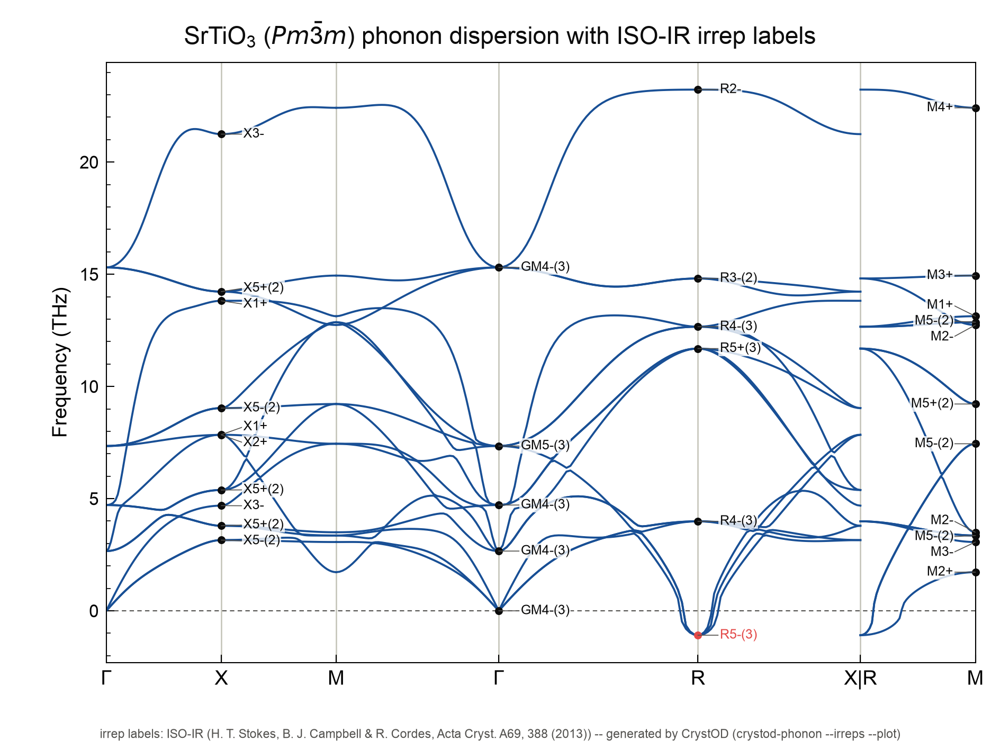
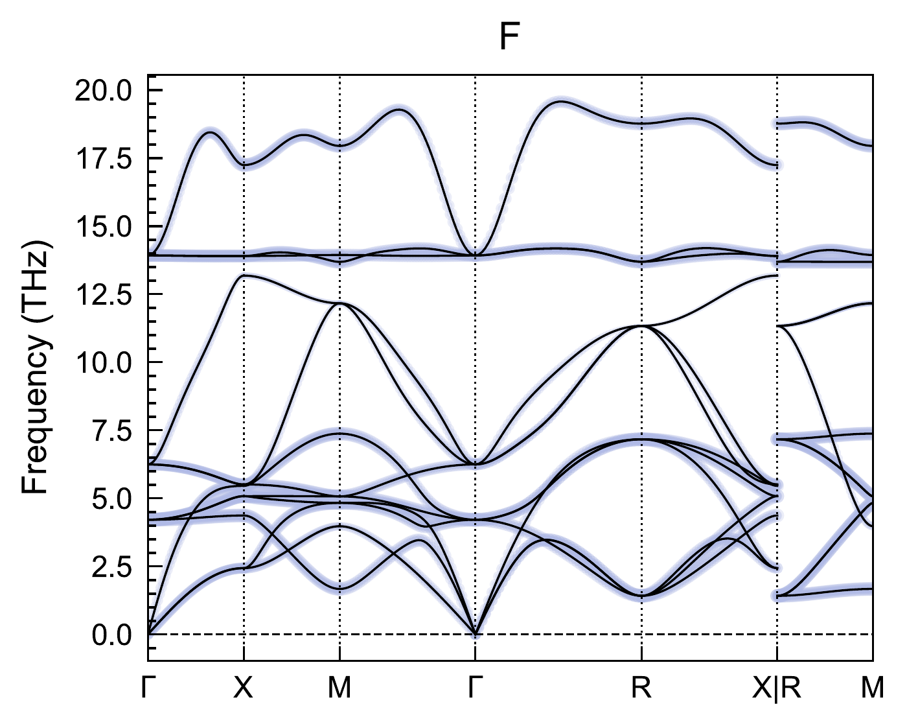
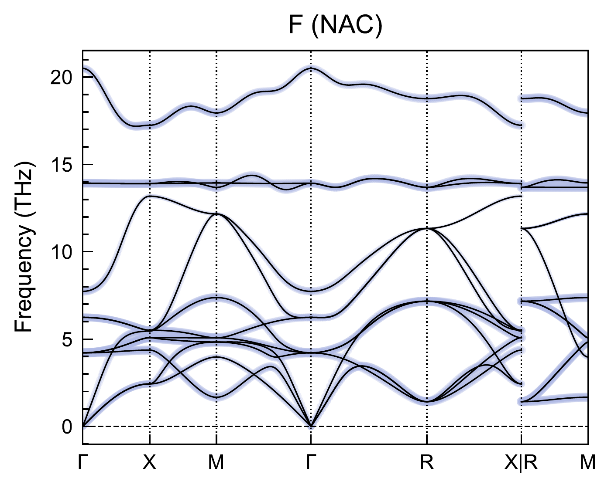
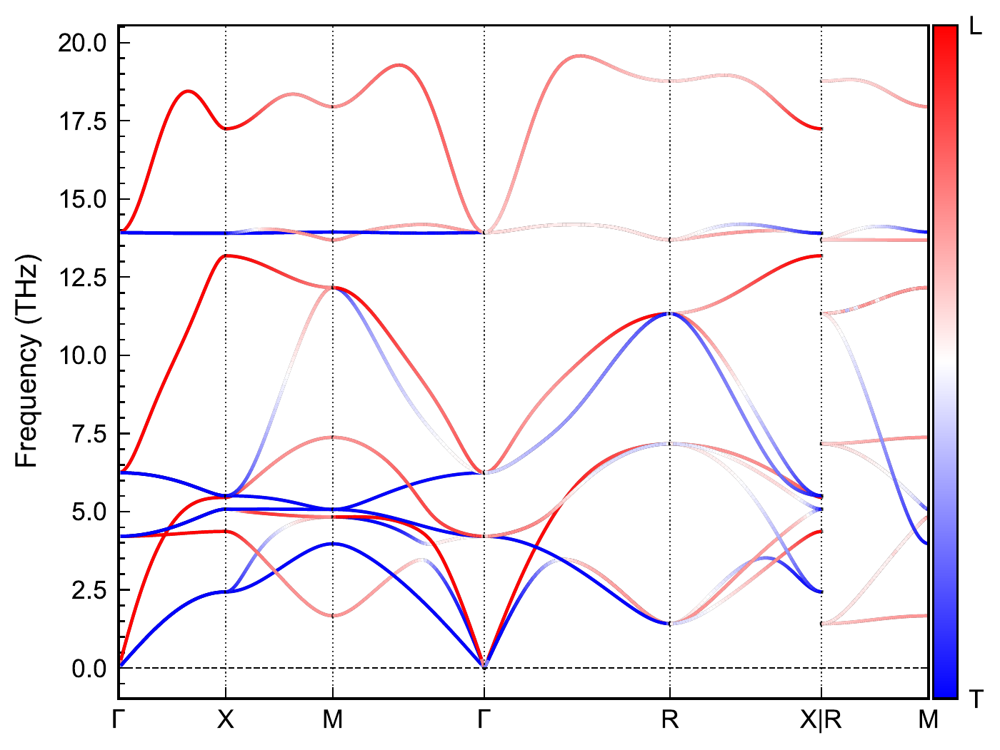
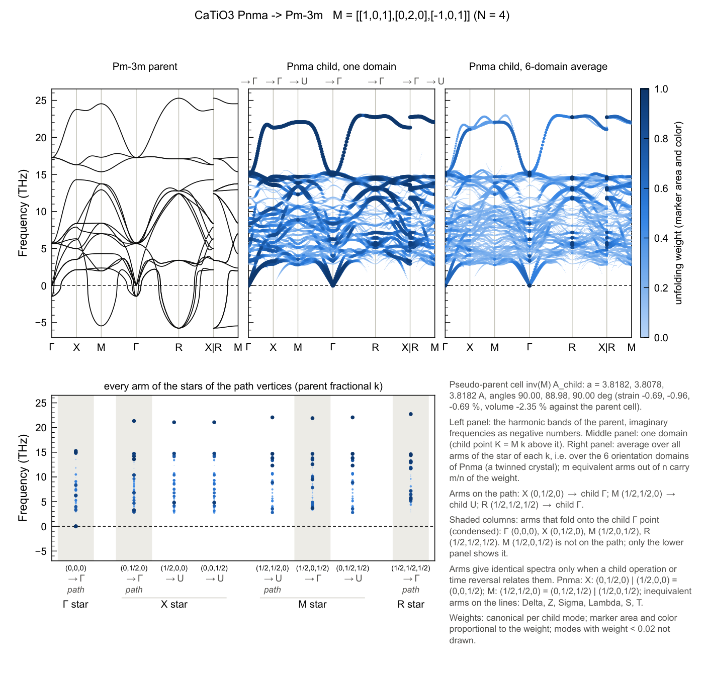
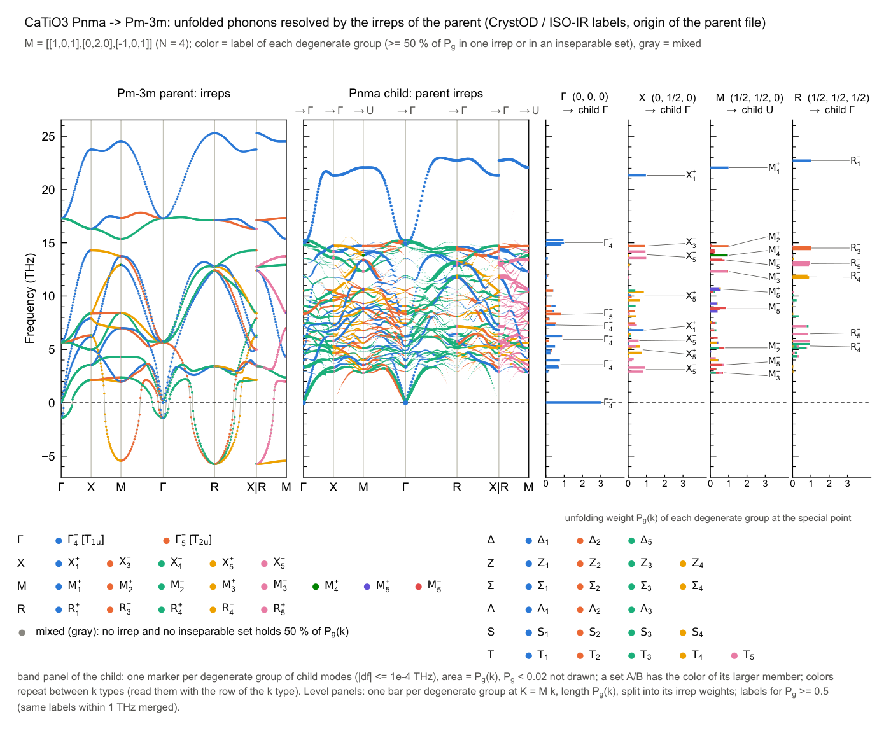
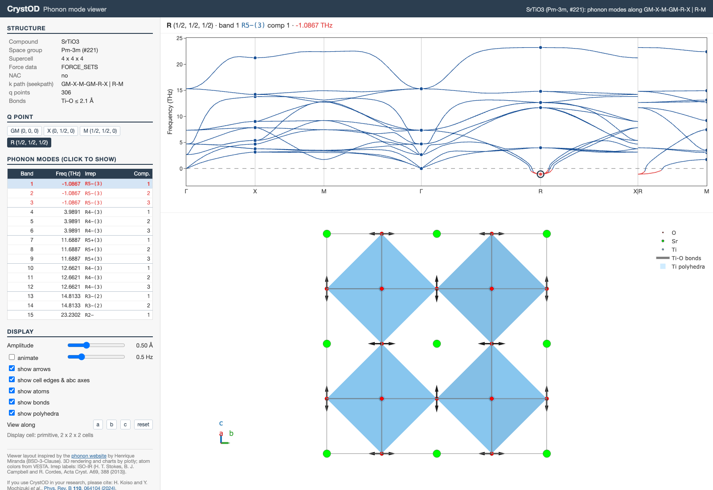
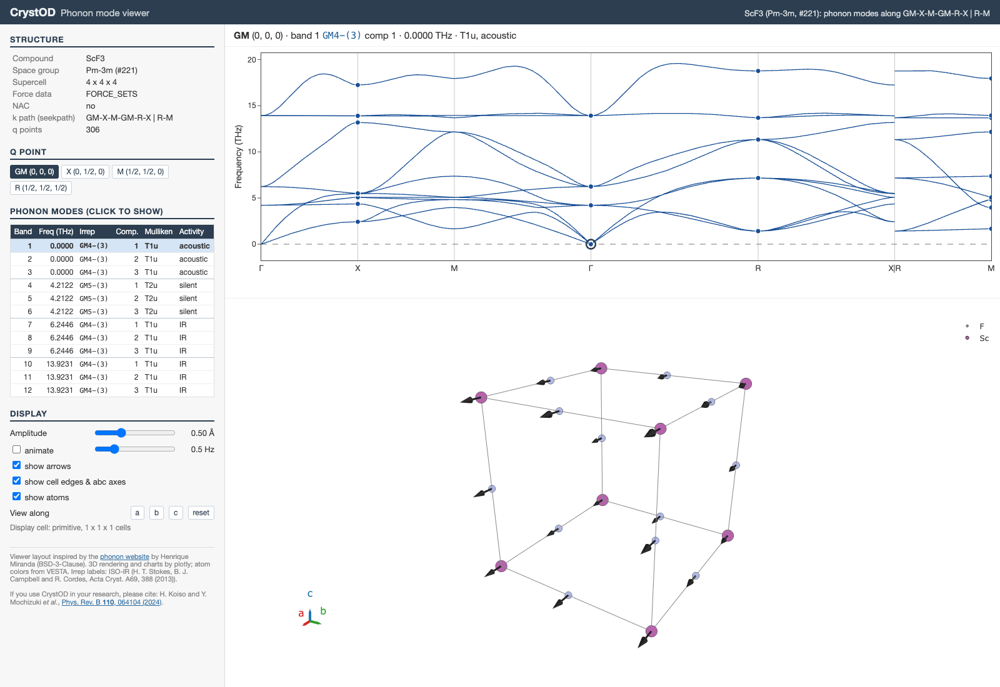

crystod-phonon#
Phonon analyses on top of phonopy data
(POSCAR + FORCE_SETS, or FORCE_CONSTANTS with --readfc, or
phonopy_params.yaml). Nine mode flags: --irreps, --fatband, --lt,
--vector, --modulation, --vibration, --subgroup, --unfold,
--visualize.
I want to … |
command |
|---|---|
label every mode with its irrep |
|
draw the dispersion with the irrep of every level at the special points |
|
know which Gamma modes are IR / Raman active or silent |
|
get the form of the Raman tensor of each Raman-active mode |
|
get mode effective charges and the static dielectric constant |
|
see which Wyckoff orbit gives which Gamma modes |
|
see which element carries which branch |
|
see which branch is longitudinal |
|
draw one mode as arrows in VESTA |
|
freeze a mode into a structure |
|
list the symmetry-allowed modes, no forces |
|
know which phases an instability can reach |
|
… and get those structures |
|
see the phonons of a distorted phase in the zone of its parent, with the parent irreps |
|
see every mode as arrows and animation in the browser, by irrep, with the dispersion |
|
32. Phonon irreps (--irreps)#
Example directory: example/32_phonon_irrep (testsuite section 32); after pip install: crystod-example 32
Note
The example/... paths on this page are those of a clone of the repository,
used from its root. After pip install CrystOD, run crystod-example NN (the
number of the example directory) in your working directory first: it copies
that directory and the shared test_POSCARs/ into ./example/, and the
commands then run from there unchanged (see crystod-example).
Which symmetry type (irreducible representation, irrep) does each phonon mode
belong to? --irreps labels the phonon modes at the special q points with
their irreps, writes them with their frequencies to phonon_irreps.yaml, and
draws next to it the phonon dispersion with these labels, phonon_irreps.pdf
(below).
See also
Theory: Irrep labels and the frame of a structure — why one mode can carry different names in different settings of the same crystal, and how a k point on a symmetry line is labeled; Phonon irrep labels on the dispersion — how the labels are placed on the bands of the figure.
Input |
Command |
Output |
|---|---|---|
POSCAR + |
|
|
POSCAR + |
add |
the same, from the force constants |
the same + |
add |
the same with the non-analytical term correction; at Γ also the mode effective charges and the dielectric constant (section 33) |
the same |
add |
|
the same |
add |
the figure along a path of your own |
cd example/32_phonon_irrep/SrTiO3_Pm-3m
crystod-phonon --irreps --dim 4 4 4 -c 221_PPOSCAR_SrTiO3
# -> phonon_irreps.yaml, phonon_irreps.pdf (--readfc reads FORCE_CONSTANTS instead of FORCE_SETS)
The file lists, for every special q point, the modes grouped into degenerate sets with their ISO-IR (ISOTROPY, Miller-Love) irrep labels and frequencies in THz — note the antiferrodistortive soft mode at R, an imaginary (negative-frequency) R5- triplet:
space_group: Pm-3m
nac: false
special_points:
- q_label: GM
q_position: [0.0, 0.0, 0.0]
- q_label: R
q_position: [0.5, 0.5, 0.5]
- q_label: X
q_position: [0.0, 0.5, 0.0]
- q_label: M
q_position: [0.5, 0.5, 0.0]
irreps:
- q_label: GM
q_position: [0.0, 0.0, 0.0]
activity_summary: GM4- x4 (3 IR, 1 acoustic), GM5- x1 (silent)
band_sets:
- band_indices: [1, 2, 3]
irrep_label: ['GM4-(3)']
mulliken: T1u
frequency: 0.0000003685
activity: [acoustic]
- band_indices: [4, 5, 6]
irrep_label: ['GM4-(3)']
mulliken: T1u
frequency: 2.6629186664
activity: [IR]
...
- q_label: R
q_position: [0.5, 0.5, 0.5]
band_sets:
- band_indices: [1, 2, 3]
irrep_label: ['R5-(3)']
frequency: -1.0867090338
...
How to read the output:
special_points: the special q points surveyed, with their positions in fractions of the primitive reciprocal basis.band_sets: the modes of a q point grouped into degenerate sets.band_indicesare 1-based, so a level can be fed straight back into--vector --modeor--modulation --mode;irrep_labelis the ISO-IR label with the dimension in parentheses;frequencyis in THz, negative for an imaginary mode (R5-(3)at -1.087 THz).At Γ each set also carries the Mulliken symbol of its irrep in a
mulliken:line afterirrep_label:, and its spectroscopic activity in anactivity:line (section 33);activity_summarysums them up.The terminal prints the Γ activity summary, the k path of the figure and the names of the two files.
The name
R5-refers to the setting of the input file, which has Sr at the origin; with Ti at the origin, or with an origin that is not a standard one, the same mode isR4+— see Irrep labels and the frame of a structure for the rules every command follows (origin, axes, supercells, the names of -k stars).
The file phonon_irreps.yaml
-o FILEwrites the YAML file to another path (-o SrTiO3_irreps.yaml, also with--all-irrepsbelow), and the figure next to it with the same name and.pdf(SrTiO3_irreps.pdf); the* Output files *block at the end of the run names the files written.
The file is YAML, and any YAML library reads it (yaml.safe_load);
crystod.phonon.read_phonon_irreps returns it as a dictionary and checks it:
key |
content |
|---|---|
|
Hermann-Mauguin symbol |
|
|
|
eps_inf and eps_0, 3x3 (only with |
|
list of |
|
the seekpath path and the midpoints of its segments, each with |
|
one entry per q point: |
|
one entry per degenerate set: |
from crystod import phonon
data = phonon.read_phonon_irreps("phonon_irreps.yaml")
for point in data["irreps"]:
for band_set in point["band_sets"]:
print(point["q_label"], band_set["band_indices"],
band_set["irrep_label"], band_set["frequency"])
Force constants (--readfc)
The example directories carry FORCE_SETS. For --readfc, write
FORCE_CONSTANTS from it with phonopy 4 first, as the README of each
32_phonon_irrep directory does:
phonopy-init -d -c 221_PPOSCAR_SrTiO3 --dim 4 4 4
phonopy phonopy_disp.yaml --writefc --fc-calc traditional
crystod-phonon --irreps --dim 4 4 4 -c 221_PPOSCAR_SrTiO3 --readfc
With
--fc-calc traditionalthese are the force constantscrystod-phononbuilds fromFORCE_SETS, andphonon_irreps.yamlis the same up to the ~1e-7 THz noise of the acoustic modes at Γ (phonopy’s default fit, symfc, shifts the SrTiO3 frequencies by up to 0.004 THz).Do not leave a
FORCE_CONSTANTSnext toFORCE_SETSunless you mean to use it: phonopy reads aFORCE_CONSTANTSit finds in the working directory even whencrystod-phononhands itFORCE_SETS(no--readfc), and that file then wins, so the “FORCE_SETS” run silently uses the force constants.
NAC and the BORN file (--nac)#
The non-analytical term correction is applied only with --nac, in every mode
that reads force data (--irreps, --fatband, --lt, --vector,
--modulation, --subgroup; not --unfold, which refuses --nac): it
then reads BORN from the working
directory (--modulation also looks next to the cell file; with --yaml, the
NAC parameters stored in the yaml come first, as in phonopy), and stops with
an error when there is none. Without --nac a BORN file lying in the
directory is not read. The header of phonon_irreps.yaml records the choice
(nac: true / nac: false), and the terminal says where the charges came
from:
NAC: Born effective charges and dielectric tensor read from BORN.
At Γ itself phonopy applies no q direction, so the --irreps labels and
frequencies at GM are those of the TO modes either way; NAC changes the
frequencies near Γ, e.g. the LO branch of a --vector or --modulation run
at a small q.
Symmetry lines as well (--all-irreps)#
The default survey covers the special points. --all-irreps additionally
labels the midpoint of every seekpath path segment — the symmetry lines
(DT, Z, SM, LD, S, T, …) — and writes phonon_irreps_all.yaml instead, so
both surveys can coexist in one directory:
crystod-phonon --irreps --dim 4 4 4 -c 221_PPOSCAR_SrTiO3 --all-irreps
# -> phonon_irreps_all.yaml, phonon_irreps_all.pdf
k_path: GM-X-M-GM-R-X | R-M # seekpath
path_midpoints: # midpoints of the k-path segments, ISO-IR k-vector types
- q_label: DT
segment: GM-X
q_position: [0.0, 0.25, 0.0]
- q_label: Z
segment: X-M
q_position: [0.25, 0.5, 0.0]
...
- q_label: DT
segment: GM-X
q_position: [0.0, 0.25, 0.0]
band_sets:
- band_indices: [1, 2]
irrep_label: ['DT5(2)']
frequency: 2.1278014037
- band_indices: [3]
irrep_label: ['DT1(1)']
frequency: 3.7542651577
...
How to read the output:
The entries of the lines follow those of the special points in the same
irrepslist and carry thesegmentkey; a midpoint whose labeling fails getsband_sets: [].This is the labeling that tells a branch apart along a line — which of the two
DT5branches is which — and it is slower than the special-points-only default.The same physical k point gets the same label whichever arm of the star or copy k + G is given (the rule is in k points: star arms, k + G, lines and -k).
The
k_pathandsegmentnames are seekpath’s; for an input outside the ISO-IR setting, an endpoint to which the frame of the labels gives another ISO-IR type than spglib’s frame, in which seekpath names its points, is printed with its ISO-IR name (the seekpathPof a shifted I-4 cell, which carriesPAlabels, asGM-X-PA-N-...).
crystod-phonon --visualize --all-irreps shows the modes at these midpoints
in the browser, with the same labels (section 40).
The dispersion with the labels (phonon_irreps.pdf)#
phonon_irreps.yaml lists the irreps point by point; every --irreps run
also puts them on the phonon dispersion. It computes the bands along the k
path with phonopy, labels every level at the special points of the path, and
draws both into one figure, phonon_irreps.pdf, next to the YAML file. No
band.yaml and no plotting script of your own are needed; the figure at the
top of the README and of the documentation start page is the one
this command writes:
cd example/32_phonon_irrep/SrTiO3_Pm-3m
crystod-phonon --irreps -c 221_PPOSCAR_SrTiO3 --dim "4 4 4"
# -> phonon_irreps.yaml, phonon_irreps.pdf


The phonon_irreps.pdf of crystod-phonon --irreps -c 221_PPOSCAR_SrTiO3 --dim "4 4 4",
converted to PNG for this page: cubic SrTiO3 (Pm-3m, 4x4x4 FORCE_SETS) along the seekpath path
Γ-X-M-Γ-R-X|R-M. Every dot is a degenerate level at a special point, with its
ISO-IR label; the imaginary R5- triplet (drawn at negative frequency) is red.#
Reading the figure#
One dot, one degenerate level. The label is the ISO-IR small irrep of the level with its dimension in parentheses, exactly the
irrep_labelofphonon_irreps.yaml(GM4-(3),R3-(2)); a one-dimensional irrep is written without its(1)(X3-,R2-). The dimensions at one point add up to the number of bands: 3 + 3 + 3 + 3 + 2 + 1 = 15 at R for the five atoms of SrTiO3.Γ. The
GM4-(3)at 0 THz is the acoustic triplet; the three otherGM4-(3)(2.66, 4.71 and 15.31 THz) are the IR-active T1u modes andGM5-(3)at 7.35 THz is the silent T2u mode, as the* Gamma-point activity *block says (see 33. Phonon activity for the Raman/IR selection rules and the Mulliken names).Red: the instability. A level below
--threshold(default -0.1 THz) is imaginary; phonopy gives it as a negative frequency and it is drawn in red. Here it isR5-(3)at -1.09 THz, the rotation of the TiO6 octahedra that drives the cubic-to-tetragonal transition of SrTiO3 (R5-in the setting of this file, with Sr at the origin;R4+with Ti at the origin, see the note on frames above). Which structures it can condense into is the subject of 41. Subgroups from imaginary modes:crystod-phonon --subgroup -c 221_PPOSCAR_SrTiO3 --dim 4 4 4 --qpoint Rgives I4/mcm for the direction (0,0,a).Close levels. Labels that would overlap are moved apart, each kept as close to its level as the room allows, and joined to its dot by a leader line: at the right-hand M,
M2-(12.74 THz),M5-(2)(12.86 THz) andM1+(13.13 THz). Two labels at one height are two levels:X2+at 7.842 THz andX1+at 7.850 THz are separate one-dimensional levels (two dots); one set holding two irreps would readX1+ + X2+(the acoustic setGM1 + GM5(2)of P4mm BaTiO3 at 0 THz is such a set).Every point once. A point is labeled at its last place on the path that is not a break: Γ at the middle vertex rather than at the left edge, X at its first vertex rather than at
X|R, and M at the right edge, with its labels to the left. Where the path jumps (X|R), the two points get their labels on either side; two equivalent points with the same levels share one set (U|Kof fcc Si).The lines between the points are not labeled. The branches along the symmetry lines carry irreps of their own (
DT1,DT5(2), … on Γ-X);--all-irrepslists them inphonon_irreps_all.yaml(the figure is the same with or without it), and a--bandpath with a vertex on the line labels them in the figure (below).
The terminal output
It is the --irreps run of the start of this section (same FORCE_SETS,
same phonon_irreps.yaml); the * Band path * block of the terminal names
the path drawn and the points that carry labels:
* Gamma-point activity *
GM4- [T1u] x4 (3 IR, 1 acoustic)
GM5- [T2u] x1 (silent)
* Band path *
k path (seekpath): GM-X-M-GM-R-X | R-M (306 q points)
Labeled points: X, GM, R, M
* Output files *
Phonon irreps written to: phonon_irreps.yaml
Phonon dispersion with irrep labels written to: phonon_irreps.pdf
The run takes about 4.5 s for this example, one second of it for the bands
and the figure. The YAML file is the result of the run: when the figure
cannot be drawn (seekpath or the labeling failing on an unusual cell), the
* Band path * block gives the reason in one
NOTE: the dispersion figure was not drawn (...) line, * Output files *
lists the YAML file alone, and the run still ends normally.
Options
The figure is a PDF named after the YAML file: phonon_irreps.pdf
(SrTiO3_irreps.pdf with -o SrTiO3_irreps.yaml, phonon_irreps_all.pdf
with --all-irreps). These options of --irreps shape it:
option |
effect |
|---|---|
|
a path of your own, in fractions of the primitive reciprocal basis; commas separate continuous pieces (default: the seekpath path of the primitive cell, as in |
|
names of the |
|
q points per leg of the path (default 51) |
|
frequency in THz below which a level is red (default -0.1, the threshold of |
|
bands with the LO-TO splitting (needs |
|
as for the YAML file: |
A malformed --band, a --band-labels count that does not fit it, or
--npoints below 2 stops the run with one line before the survey.
A path of your own, here with a vertex in the middle of Γ-X, so that the branches of the line DT are labeled as well:
crystod-phonon --irreps -c 221_PPOSCAR_SrTiO3 --dim "4 4 4" \
--band "0 0 0 1/4 0 0 1/2 0 0, 1/2 1/2 0 1/2 1/2 1/2"
# -> phonon_irreps.yaml, phonon_irreps.pdf (add -o band.yaml to write band.yaml, band.pdf and keep the seekpath figure)
* Band path *
k path (--band): GM-DT-X | M-R (153 q points)
Labeled points: GM, DT, X, M, R
The vertex (1/4, 0, 0) is named DT by its ISO-IR k-vector type and gets the
DT1, DT2, DT5(2) labels; at the jump X|M the X labels go to the left
of the break and the M labels to the right.
Note
With --nac the bands show the LO-TO splitting near Γ, but the Γ labels are
those of the TO modes (phonopy applies no q direction at Γ itself; see
NAC and the BORN file): the LO branches end at
Γ without labels, and the * Band path * block says so in a NOTE: line.
Text is set in Arial, or in DejaVu Sans where Arial is not installed; the figure is 16 cm x 12 cm.
33. Phonon activity (IR, Raman, mode charges)#
Example directory: example/33_phonon_activity (testsuite section 33); after pip install: crystod-example 33
The Γ phonons are the ones first-order infrared absorption and Raman scattering see. This section reads the spectroscopic side of a phonon calculation off them, for assigning measured spectra or checking a calculation against them: which modes are IR active, Raman active or silent, the Raman tensor of each line and, with Born effective charges, what each IR mode adds to the static dielectric constant. There is no mode flag of its own; the results are printed by the commands of the table.
See also
Theory: Spectroscopic activity of the Gamma phonons — the IR and Raman selection rules, the counting of the acoustic modes and the conventions of the Mulliken symbols; Mode effective charges and the static dielectric tensor — the formulas behind the dielectric table; Symmetry-allowed Raman tensors — how the tensors are built, and their comparison with Loudon’s tables.
Input |
Command |
Output |
|---|---|---|
POSCAR + |
|
terminal |
POSCAR alone, no forces |
|
the same from the structure alone, plus the Wyckoff-orbit breakdown (section 38) |
POSCAR + |
|
mode effective charges, Δε of every Γ set, ε0, LST check |
either of the first two |
add |
Raman tensor of every Raman-active irrep |
Spectroscopic activity#
At Γ every degenerate set gets its spectroscopic activity, IR, Raman,
both, silent or acoustic, and the terminal prints the summary in a
* Gamma-point activity * block, one irrep per line:
crystod-phonon --irreps --dim 4 4 4 -c 221_PPOSCAR_SrTiO3
* Gamma-point activity *
GM4- [T1u] x4 (3 IR, 1 acoustic)
GM5- [T2u] x1 (silent)
* Band path *
k path (seekpath): GM-X-M-GM-R-X | R-M (306 q points)
Labeled points: X, GM, R, M
* Output files *
Phonon irreps written to: phonon_irreps.yaml
Phonon dispersion with irrep labels written to: phonon_irreps.pdf
How to read it:
GM4- [T1u]is the ISO-IR label with its Mulliken symbol in brackets;x4is the number of degenerate sets that carry it, followed by what they are: here one acoustic set and three IR-active optical sets. Theactivity_summary:line ofphonon_irreps.yamlis the same summary without the brackets, and every Γ set of the file has itsmulliken:andactivity:lines (section 32).IR active: the mode carries an electric dipole. Raman active: its irrep occurs in the representation of the polarizability tensor. silent: neither. acoustic: the three rigid translations, reported as
acousticrather than IR although their irrep is that of the vector representation.“Active” means allowed by symmetry: the intensity of an allowed line can still be too weak to observe.
unknownmarks a set whose characters are not those of a representation (too small a--tolerancesplit a degenerate set; raise it),?a set that could not be labelled.A set can hold more than one irrep (the acoustic set of a polar crystal, or optical irreps within
--toleranceof each other); itsactivity:line then lists every kind that occurs ([IR, silent, acoustic]), and the summary does not depend on the tolerance.The Mulliken symbols are the ones phonopy itself prints. B1/B2 (and B1/B2/B3) follow phonopy’s axis convention, which can differ from other tables, and refer to the axes of the standard setting even for a cell given in another setting (Pbnm instead of Pnma, for instance).
Mode effective charges and the dielectric tensor (--irreps --nac)#
With --nac, the Born effective charges and the electronic dielectric tensor
of BORN also give the polar response of the Γ phonons (the input is that of
example/34_phonon_fatband/ScF3_Pm-3m):
crystod-phonon --irreps --dim 4 4 4 -c 221_PPOSCAR_ScF3 --nac
NAC: Born effective charges and dielectric tensor read from BORN.
* Gamma-point activity *
GM4- [T1u] x3 (2 IR, 1 acoustic)
GM5- [T2u] x1 (silent)
* Gamma-point dielectric response (Born effective charges from BORN) *
set irrep freq (THz) activity |Z~| (e/sqrt(amu)) Delta eps (xx, yy, zz)
1 GM4- 0.0000 acoustic 0.0000 -
2 GM5- 4.2122 silent 0.0000 0.0000 0.0000 0.0000
3 GM4- 6.2446 IR 0.7313 2.9993 2.9993 2.9993
4 GM4- 13.9231 IR 1.4304 2.3086 2.3086 2.3086
eps_inf (diag): 2.2839 2.2839 2.2839
sum Delta eps (diag): 5.3079 5.3079 5.3079
eps_0 (diag): 7.5919 7.5919 7.5919
sum_kappa Z*_kappa: max |deviation| = 1.00e-08 (acoustic sum rule)
LST check: prod (nu_LO/nu_TO)^2 = 3.3240, eps_0/eps_inf = 3.3240 (q -> 0 along [1 0 0])
* Band path *
k path (seekpath): GM-X-M-GM-R-X | R-M (306 q points)
Labeled points: X, GM, R, M
NOTE: at GM the labels are those of the TO modes (phonopy applies no q direction at GM itself); the LO branches end there without labels
* Output files *
Phonon irreps written to: phonon_irreps.yaml
Phonon dispersion with irrep labels written to: phonon_irreps.pdf
How to read it (one row per degenerate set, then the totals):
|Z~|(e/sqrt(amu)): the size of the mode effective charge of the set, the dipole its displacement carries (the root of the sum of its squares over the bands of the set, which does not depend on how the degenerate eigenvectors were chosen).Delta eps (xx, yy, zz): the contribution of the set to the static dielectric tensor (its diagonal); the acoustic bands are left out (-).eps_infis the electronic tensor ofBORN, andeps_0 = eps_inf + sum Delta eps.The acoustic sum rule line: the Born charges of all atoms of the cell add up to zero; the line gives the largest element of that sum, a check of the
BORNfile.The Lyddane-Sachs-Teller check compares the product over the optical bands of
(nu_LO / nu_TO)^2witheps_0 / eps_infalong the same direction (q -> 0 along [1 0 0], reduced reciprocal coordinates). The two numbers come out of independent calculations, and their agreement checks the charges, the frequencies and the units together.An imaginary optical mode with a dipole (a polar soft mode) has a negative
Delta eps; the table then adds the linenote: N imaginary optical band(s) (bands ...) contribute with negative sign; eps_0 is not a static dielectric constant of an unstable structure.
The entries in phonon_irreps.yaml
phonon_irreps.yaml gets the two tensors in its header and two lines per Γ
set:
nac: true
dielectric_electronic: [[2.283939, 0.000000, 0.000000], [0.000000, 2.283939, 0.000000], [0.000000, 0.000000, 2.283939]]
dielectric_static: [[7.591860, 0.000000, 0.000000], [0.000000, 7.591860, 0.000000], [0.000000, 0.000000, 7.591860]]
...
- band_indices: [10, 11, 12]
irrep_label: ['GM4-(3)']
mulliken: T1u
frequency: 13.9231282991
activity: [IR]
mode_effective_charge: [[0.000000, -0.011905, -0.825778], [0.000000, -0.825778, 0.011905], [-0.825864, 0.000000, 0.000000]]
dielectric_contribution: [2.308629, 2.308629, 2.308629]
mode_effective_charge holds one Cartesian vector per band (its direction
inside a degenerate set follows phonopy’s choice of eigenvectors);
dielectric_contribution is the diagonal of Delta eps.
Raman tensors (--raman-tensor)#
--raman-tensor adds the symmetry-allowed form of the Raman tensor of every
Raman-active irrep among the Γ phonons. It works with --irreps and, from the
structure alone, with --vibration --qpoint GM:
crystod-phonon --irreps --dim 4 4 4 -c 227_PPOSCAR_Si --raman-tensor
* Gamma-point activity *
GM4- [T1u] x1 (acoustic)
GM5+ [T2g] x1 (Raman)
* Raman tensors (Cartesian axes of the input cell) *
GM5+ [T2g] (3 tensors): [[0, 0, 0], [0, 0, a], [0, a, 0]] [[0, 0, a], [0, 0, 0], [a, 0, 0]] [[0, a, 0], [a, 0, 0], [0, 0, 0]]
* Band path *
k path (seekpath): GM-X-U | K-GM-L-W-X (306 q points)
Labeled points: U|K, GM, L, W, X
* Output files *
Phonon irreps written to: phonon_irreps.yaml
Phonon dispersion with irrep labels written to: phonon_irreps.pdf
How to read it:
The tensors are written in the Cartesian axes of the input cell (the axes of the POSCAR lattice vectors), so that they can be compared with a polarization geometry in the laboratory frame of that cell; a cell rotated in space gives the rotated tensors. The Mulliken symbol in brackets refers to the axes of the standard setting, so for a cell in a non-standard setting (Pbnm instead of Pnma) the tensor of B1g need not be xy.
Each tensor of an irrep has its own free constant
a, with exact entries where possible (-2*a,sqrt(3)/2*a). A complex irrep is listed together with its conjugate (GM2GM3).For an irrep that occurs once in the symmetric square the tensors are its partners (the cubic Eg pair
diag(a, a, -2a)anddiag(a, -a, 0)). A one-dimensional irrep that occurs twice (A1 of 4mm and 6mm) prints its two basis tensors, and a mode’s tensor is a combination of them (diag(a, a, b)).An irrep of dimension two that occurs twice (E of 3m, -3m and 32, and the complex E pair of 3 and -3) is printed per partner instead (
2 partners, constants a, b), with constants shared across the partners, as in the tables; the two partners of a mode of the irrep have these forms with the sameaandb:
The Eg tensors of Bi
crystod-phonon --vibration -c 166_PPOSCAR_Bi --qpoint GM --raman-tensor
...
* Raman tensors (Cartesian axes of the input cell) *
GM1+ [A1g] (2 tensors): [[a, 0, 0], [0, a, 0], [0, 0, 0]] [[0, 0, 0], [0, 0, 0], [0, 0, a]]
GM3+ [Eg] (2 partners, constants a, b): [[a, 0, 0], [0, -a, b], [0, b, 0]] [[0, a, b], [a, 0, 0], [b, 0, 0]]
Limits
Limits:
The activities and tensors are symmetry selection rules for first-order (one-phonon) IR absorption and Raman scattering at Γ: they say which lines can appear and in which polarizations, not their intensities (the dielectric table gives the IR oscillator strengths from the Born charges; Raman intensities need the polarizability derivatives).
The point group is that of the atomic structure; magnetic order is not taken into account.
--raman-tensortakes Γ only (--vibrationat another q point stops with an error).
From Python
Python API. The MCP tool is crystod_phonon_activity (the Γ activity
table, the Wyckoff-orbit breakdown and the Raman tensors of a POSCAR, without
force constants). gamma_mode_activities prints nothing on stdout: the
primitive-cell note of the commands is left out, so it cannot reach the
protocol stream of the MCP server (see quiet in
What is written):
from crystod import phonon
from crystod.vasp_io import read_poscar_cell
cell = read_poscar_cell("221_PPOSCAR_SrTiO3") # or a phonopy object with forces
phonon.gamma_mode_activities(cell) # list of Activity records, one per mode space or set
phonon.gamma_raman_tensors(read_poscar_cell("227_PPOSCAR_Si")) # list of RamanTensors
phonon.mulliken_symbols(cell) # {'GM1+': 'A1g', ..., 'GM4-': 'T1u', ...}
import phonopy # example/34_phonon_fatband/ScF3_Pm-3m
ph = phonopy.load(unitcell_filename="221_PPOSCAR_ScF3", supercell_matrix=[4, 4, 4],
force_sets_filename="FORCE_SETS", born_filename="BORN", is_nac=True)
phonon.dielectric_response(ph).eps_static # DielectricResponse; diagonal 7.5919
phonon.mode_effective_charges(ph) # (n_bands, 3) array at Gamma, e/sqrt(amu); here (12, 3)
34. Phonon fatbands (--fatband)#
Example directory: example/34_phonon_fatband (testsuite section 34); after pip install: crystod-example 34
Which element carries which phonon branch?
Input |
Command |
Output |
|---|---|---|
POSCAR + |
|
|
the same + |
add |
|
the same |
add |
the PDF of that element only |
Plot phonon fatbands colored by the element-projected phonon density (sum of
squared eigenvector components over each element’s atoms), directly from
POSCAR + FORCE_SETS (or FORCE_CONSTANTS with --readfc):
cd example/34_phonon_fatband/ScF3_Pm-3m
crystod-phonon --fatband -c 221_PPOSCAR_ScF3 --dim 4 4 4
# -> fatband_Sc.pdf, fatband_F.pdf


fatband_F.pdf for ScF3 (4x4x4 FORCE_SETS): the F-projected weight (shading)
concentrates on the soft rotational branches around R and M and on the
high-frequency stretching bands, while the Sc-dominated mid-frequency bands
stay unshaded (they appear in fatband_Sc.pdf instead).#
The space group is detected, the high-symmetry k-path is generated
automatically with seekpath, and the band structure is computed with
eigenvectors and band connection through the phonopy API — no band.yaml
needed. One PDF per element is written, in the VESTA default element colors,
with dot sizes proportional to the projected weight.
Plotting style based on script/phonon_fatband.py by Hiroki Koiso.
Options
Options:
option |
effect |
|---|---|
|
restricts the output to one element |
|
a manual k-path instead of seekpath |
|
the q-point density per path leg (default 51) |
|
projects the displacements onto a direction in reduced coordinates before squaring |
LO/TO splitting (--nac)#
crystod-phonon --fatband -c 221_PPOSCAR_ScF3 --dim 4 4 4 --nac
# -> fatband_nac_Sc.pdf, fatband_nac_F.pdf


fatband_nac_F.pdf — the same F-projected fatband with the non-analytical
term correction (a BORN file in the current directory). The LO/TO splitting
lifts the highest F-dominated branch at Gamma from 13.9 to 20.5 THz, while the
zone-boundary soft modes at R and M are untouched: the correction acts only in
the long-wavelength limit. The plot title carries an “(NAC)” tag, and the file
names get a nac_ prefix so corrected and uncorrected fatbands coexist.#
35. Longitudinal/transverse bands (--lt)#
Example directory: example/35_phonon_lt (testsuite section 35); after pip install: crystod-example 35
Which branch is longitudinal and which transverse?
Input |
Command |
Output |
|---|---|---|
POSCAR + |
|
|
the same + |
add |
|
Plot the phonon band structure colored by the longitudinal/transverse character of each mode (red = longitudinal, blue = transverse, white = mixed or Gamma):
cd example/35_phonon_lt/ScF3_Pm-3m
crystod-phonon --lt -c 221_PPOSCAR_ScF3 --dim 4 4 4
crystod-phonon --lt -c 221_PPOSCAR_ScF3 --dim 4 4 4 --nac
# -> phonon_band_LT.pdf / phonon_band_LT_nac.pdf


phonon_band_LT.pdf for ScF3: red = longitudinal, blue = transverse,
white = mixed. Along GM-X the acoustic set splits visibly into one red L
branch and two blue T branches; the flat band near 14 THz is purely
transverse throughout the zone.#
The longitudinal character of a mode is sqrt(sum_atoms |q_hat . e_atom|^2),
the norm of the eigenvector projection onto the propagation direction, which is
valid along any path direction including diagonal segments such as GM-R. With
--nac the split-off LO branches show up as purely red. Based on
script/LT_phonon_band.py maintained by Hiroki Koiso, after Qijing Zheng.
36. Phonon eigenvectors (--vector)#
Example directory: example/36_phonon_vector (testsuite section 36); after pip install: crystod-example 36
Which way do the atoms move in a phonon mode?
Input |
Command |
Output |
|---|---|---|
POSCAR + |
|
terminal mode table, |
the same |
add |
one |
the same |
add |
the pattern in the conventional cell |
Diagonalize the dynamical matrix directly at the selected q point via the
phonopy API, list the modes with their frequencies and irrep labels, and export
the selected eigenvectors as .vesta files with per-atom displacement arrows:
cd example/36_phonon_vector/Si_Fd-3m
crystod-phonon --vector --dim "4 4 4" -c 227_PPOSCAR_Si --qpoint GM
* Structure *
Space group: Fd-3m (#227)
* Available high-symmetry q-points *
GM [0.0, 0.0, 0.0]
L [0.5, 0.5, 0.5]
X [0.5, 0.0, 0.5]
W [0.5, 0.25, 0.75]
* Selected Q point *
Selected q-point: GM = [0.0, 0.0, 0.0]
* Phonon modes at q = GM *
Mode Freq (THz) Irrep
----------------------------------------
1 0.0000 GM4-(3)
2 0.0000 GM4-(3)
3 0.0000 GM4-(3)
4 14.9571 GM5+(3)
5 14.9571 GM5+(3)
6 14.9571 GM5+(3)
* Displacement patterns *
No --mode given; exporting all 6 modes as individual VESTA files.
Commensurate supercell for visualization: 1x1x1
+ mode 1: GM4-(3), 0.0000 THz
...
+ mode 6: GM5+(3), 14.9571 THz
Arrows are scaled so the largest displacement is 1.5 A; adjust arrow size in VESTA via Edit > Vectors or Properties > Vectors if needed.
* Output files *
Mode table written to: phonon_modes_Si_GM.txt
Mode 1 written to: POSCAR_Si_GM_mode1_GM4-.vesta
...
Mode 6 written to: POSCAR_Si_GM_mode6_GM5+.vesta
The mode table of the * Phonon modes at q = ... * block is also saved as
phonon_modes_<formula>_<qlabel>.txt.
Degenerate modes are exported as symmetry-adapted eigenvectors, the same
ones as in --modulation: the three degenerate GM5+ optical modes of Si point
exactly along the cubic axes instead of the arbitrary tilted combinations a
plain eigensolver returns (how they are built:
Symmetry-adapted eigenvectors of degenerate phonon levels).
Selecting modes and cells (--mode, --conventional)
Select the modes with --mode (1-based, as in the table above); several mode
numbers are summed into one displacement pattern:
# one optical GM5+ mode
crystod-phonon --vector --dim "4 4 4" -c 227_PPOSCAR_Si --qpoint GM --mode 4
# the whole triplet, summed
crystod-phonon --vector --dim "4 4 4" -c 227_PPOSCAR_Si --qpoint GM --mode 4 5 6
# X point: the commensurate supercell (2x1x2) and Bloch phases are applied automatically
# (--readfc: the development tree keeps a FORCE_CONSTANTS here, which is
# not in the pip package; a crystod-example copy has FORCE_SETS only, so write
# one as in section 32 or drop --readfc)
crystod-phonon --vector --dim "4 4 4" -c 227_PPOSCAR_Si --qpoint X --mode 1 --readfc
# conventional cell (POSCAR_Si_GM_mode4+5+6_GM5+_conv.vesta)
crystod-phonon --vector --dim "4 4 4" -c 227_PPOSCAR_Si --qpoint GM --mode 4 5 6 --conventional
The VESTA files
Files are auto-named POSCAR_<formula>_<qlabel>_mode<N>_<irrep>.vesta (mode
numbers zero-padded so ls lists them in order) and open directly in
VESTA, showing the equilibrium structure with
red arrows for the real part of the mass-weighted eigenvector displacement,
rescaled so that the largest displacement equals --amplitude (default
1.5 Angstrom).
The q point (--qpoint)
--qpoint accepts a high-symmetry label (GM, X, L, …) or three
primitive reciprocal coordinates (fractions allowed). For a q point that is not
special, the file name carries its ISO-IR k-vector type (SM, DT, …);
--keep-q-coords names it by coordinates instead (see section 37), so a scan
along one symmetry line does not overwrite itself.
37. Phonon modulation (--modulation)#
Example directory: example/37_modulation (testsuite section 37); after pip install: crystod-example 37
Generate modulated (displaced) structures from symmetry-adapted phonon modes:
choose a q point and the modes, and --modulation writes the displaced
structure, prints its space group and names the file after it.
See also
Theory: Phonon modulation: modes, amplitudes and phases — the displacement that is frozen in, how the partners, signs and phases of a degenerate level are fixed, and why the space group is to be read at 1e-5.
Input |
Command |
Output |
|---|---|---|
POSCAR + |
|
terminal: the mode table (frequency, irrep, degeneracy) and the star of q, to choose the modes |
the same |
add |
|
|
|
the same structure |
several q points (arms of a star) |
|
one structure with all the terms |
a scan along a line |
add |
the files named by the q coordinates |
The inputs are the ones you already have — the unit cell and FORCE_SETS
(or FORCE_CONSTANTS with --readfc); a phonopy_params.yaml works too, but
none has to be produced first:
cd example/37_modulation/ScF3_Pm-3m
crystod-phonon --modulation -c 221_PPOSCAR_ScF3 --qpoint 0.5 0.5 0.5 --mode 1 2 3 --amplitude 0.3
crystod-phonon --modulation --yaml phonopy_params.yaml --qpoint 0.5 0.5 0.5 --mode 1 2 3 --amplitude 0.3
The q point, --yaml and -c
--qpoint takes three primitive reciprocal coordinates or a special-point
label, resolved as in --vector and --subgroup (--qpoint R is
--qpoint 0.5 0.5 0.5 here; the numbered --qpointN take the same forms).
The two write the same structure, byte for byte. FORCE_SETS is looked for in
the current directory first and then next to the -c file, so
-c ../221_PPOSCAR_ScF3 works from a scratch directory. --yaml and -c are
alternatives, not a pair:
crystod-phonon: error: --modulation takes either --yaml or -c (with FORCE_SETS/FORCE_CONSTANTS), not both.
Where the supercell comes from#
--modulation is the one mode that does not need --dim —
--irreps/--fatband/--lt/--vector/--subgroup still do. It resolves the
supercell of the force calculation in this order, and always prints what it
used, so an inferred supercell is never silent:
source |
when |
|
|---|---|---|
1 |
|
given explicitly; wins over the rest |
2 |
the |
that file sits in the current directory |
3 |
the atom count of |
nothing else says |
Note
The -c route takes the primitive cell the way every other crystod-phonon
mode does — primitive_matrix="auto" — while a phonopy_params.yaml carries
whatever primitive matrix it was built with. For a primitive input cell (any P
lattice) the two coincide, which is why the commands above agree byte for byte;
hand -c a centred conventional cell and the -c route works in the smaller
primitive cell instead. The printed Primitive cell: line always says which
one you got.
What the run prints
crystod-phonon --modulation -c 221_PPOSCAR_ScF3 --dim "4 4 4" --qpoint 0.5 0.5 0.5 --mode 1 2 3 --amplitude 0.3
crystod-phonon --modulation -c 221_PPOSCAR_ScF3 --readfc --qpoint 0.5 0.5 0.5 --mode 1 2 3 --amplitude 0.3
# --readfc reads FORCE_CONSTANTS (the shipped example directory carries FORCE_SETS)
* Phonon source *
Supercell 4x4x4 read from phonopy_disp.yaml. Primitive cell: 4 atoms of the 4-atom input cell (primitive_matrix auto).
* Selected Q point *
Loading '221_PPOSCAR_ScF3 + FORCE_SETS' at q = [0.5, 0.5, 0.5]...
* Phonon source *
Supercell 4x4x4 inferred from the 256 atoms of FORCE_SETS; pass --dim if that is not the supercell of your force calculation. Primitive cell: 4 atoms of the 4-atom input cell (primitive_matrix auto).
Case 3 counts atoms, so it fixes only the product n1*n2*n3; the shape is
picked to respect the metric of the cell (|a| = |b| forces n1 = n2). It is
a guess, the message says so, and --dim overrides it. For the ScF3 example
every route in the table — and --yaml — writes the same file, byte for byte.
A supercell that is not diagonal
A supercell that is not diagonal is refused rather than guessed at — any diagonal guess with the right atom count loads without complaint, so the error would otherwise be silent:
ERROR: 'phonopy_disp.yaml' states a supercell_matrix that is not a positive diagonal matrix; this workflow supports diagonal supercells only. Inferring one instead would silently give the wrong answer, since any guess with the right atom count loads without complaint. Use --yaml phonopy_params.yaml, or give the diagonal supercell with --dim "n n n".
Choosing the modes#
When --mode is omitted, only the mode table and the star of q are printed, so
the modes at a q point can be inspected before choosing:
crystod-phonon --modulation -c 221_PPOSCAR_ScF3 --qpoint 0.5 0.5 0.5
* Phonon source *
Supercell 4x4x4 read from phonopy_disp.yaml. Primitive cell: 4 atoms of the 4-atom input cell (primitive_matrix auto).
* Selected Q point *
Loading '221_PPOSCAR_ScF3 + FORCE_SETS' at q = [0.5, 0.5, 0.5]...
* Phonon modes at q = [0.5 0.5 0.5] *
Mode Freq (THz) Irrep Degeneracy
--------------------------------------------------
1 1.4169 R4+(3) 3
2 1.4169 R4+(3) 3
3 1.4169 R4+(3) 3
4 7.1689 R5+(3) 3
5 7.1689 R5+(3) 3
6 7.1689 R5+(3) 3
7 11.3334 R4-(3) 3
8 11.3334 R4-(3) 3
9 11.3334 R4-(3) 3
10 13.6922 R3+(2) 2
11 13.6922 R3+(2) 2
12 18.7661 R1+(1) 1
* Star of q (arms related by the space-group rotations) *
|G| = 48, |G_k| = 48, |star of k| = 1
arm 1: k = [+0.5, +0.5, +0.5]
No --mode given. Choose mode number(s) from the table above and rerun with
--mode (and optionally --amplitude) to generate a modulated structure.
Then apply the chosen modes:
crystod-phonon --modulation -c 221_PPOSCAR_ScF3 \
--qpoint 0.5 0.5 0.5 --mode 1 2 3 --amplitude 0.3
# -> MPOSCAR_R_mode1+2+3_R4+_R-3c
The soft octahedral-rotation triplet of ScF3 is the lowest R4+ set, modes 1-3;
applying all three with equal amplitudes condenses the (a,a,a) direction, and
the space group of the modulated structure is detected and printed as R-3c —
matching the --parent Pm-3m --irrep R4+ isotropy table of crystod-group
(section 20). The output name follows
MPOSCAR_{q}_{mode}_{irrep}_{subgroup} unless --output is given, and a single
--amplitude applies to all selected modes.
Note
The space group is reported at a 0.1 Å tolerance by default, which is what makes
a nearly-symmetric distortion read as the symmetric one. Pass --tolerance 1e-5
to classify the structure at the tolerance the order-parameter direction implies:
--mode 1 2 3 --amplitude 0.3 0.15 0.075 is the direction (a,b,c) and prints
P-1 at 1e-5, but C2/c at the default, because the smallest of the three
displacements is below 0.1 Å. The 1e-5 result is the one to report.
--tolerance also sets the tolerance of the mode construction itself (default
1e-5).
Several q points (--qpoint1, --qpoint2, …)
Different q points can be combined with numbered argument sets
(--qpoint1/--mode1/--amplitude1, --qpoint2/--mode2/--amplitude2, …):
crystod-phonon --modulation --yaml phonopy_params.yaml \
--qpoint1 0 0.5 0.5 --mode1 1 --amplitude1 0.3 \
--qpoint2 0.5 0 0.5 --mode2 1 --amplitude2 0.3 \
--qpoint3 0.5 0.5 0 --mode3 1 --amplitude3 0.3 \
--output POSCAR_multi_q_arms
The star of q is displayed for each selected q point, which is what makes
combining arms of the same star (the three X or M arms of a perovskite)
straightforward. The X point of body-centred tetragonal Sr3Ti2O7 has two arms,
(0,0,1/2) and (1/2,1/2,0); its lowest mode, X3-, frozen into both with
equal amplitudes is the direction X3-(a;a):
cd example/37_modulation/Sr3Ti2O7_I4mmm
# a crystod-example copy has no phonopy_params.yaml (the file is
# not in the pip package): make it from the unit cell and FORCE_SETS with
# phonopy 4 first
phonopy-init -d -c 139_PPOSCAR_Sr3Ti2O7 --dim 4 4 4
phonopy phonopy_disp.yaml --sp
crystod-phonon --modulation --yaml phonopy_params.yaml \
--qpoint1 0 0 0.5 --mode1 1 --amplitude1 0.3 \
--qpoint2 0.5 0.5 0 --mode2 1 --amplitude2 0.3
...
* Modulation *
Term 1: q = [0.0, 0.0, 0.5], modes = [1], amplitudes (A) = [0.3]
Term 2: q = [0.5, 0.5, 0.0], modes = [1], amplitudes (A) = [0.3]
* Symmetry of the generated structure *
Space group: P4_2/mnm (#136)
Hall symbol: -P 4n 2n
* Output files *
Modulated structure written to: MPOSCAR_X_mode1_X3-_X_mode1_X3-_P4_2mnm
The blocks before * Modulation * are those of a single q point, repeated for
each term: * Selected Q point *, * Phonon modes at q = ... * and * Star of q ... *.
One arm alone gives X3-(0;a), Cmcm, and unequal amplitudes X3-(a;b), Pnnm
(check it with --tolerance 1e-5: at the default tolerance, amplitudes as
different as 0.3 and 0.16 still read as P4_2/mnm) — the rows of
crystod-group --parent I4/mmm --irrep X3-. --qpoint2 -0.5 0.5 0, the same
point written with another reciprocal lattice vector, writes the same
structure.
What is frozen in#
--modulation freezes in the harmonic eigen-displacement of the chosen modes:
phonopy’s eigenvector divided by the square root of the atomic mass, with its
Bloch phase, so heavy atoms move less than light ones. For a non-degenerate
mode at a time-reversal-invariant q it is, up to its sign, the pattern
phonopy’s own MODULATION freezes in (the test suite compares the two,
section 37). In practice:
--amplitude(Å) is the norm of the displacement of one primitive cell (default 0.3 Å). At a time-reversal-invariant q (2qa reciprocal lattice vector: Γ and the zone-boundary points such as X, M, R, N) every primitive cell of the supercell is displaced by a pattern of norm exactlyA; at any other q the real displacement varies from cell to cell along the modulation.q may be written any way.
q + Gis the same modulation asq:(0.5, 0.5, 0)and(-0.5, 0.5, 0)of Sr3Ti2O7 write the same structure. Two different arms of the star are two different modulations (domains related by a rotation of the parent); the printed star lists them.One
--modenumber of a degenerate level is one partner, an order-parameter direction of the irrep, and equal amplitudes give the combined directions (--mode 1 2 3of the R4+ triplet of ScF3 is(a,a,a), R-3c;--mode 1,2and3alone rotate the octahedra about a, b and c). Which subgroup--mode Ngives does not depend on the origin, the orientation or the lattice basis of the input cell;--subgroup --modulategenerates every direction.At any other q the global phase is a convention: a structure frozen there is one member of a family related by a shift of the modulation along the lattice, and its space group is the one of that member.
The cell is used as it is. The primitive cell of the phonopy object keeps its origin, orientation and lattice basis in the output (the atoms are only grouped by species, as a POSCAR needs). That cell must be primitive (
primitive_matrix="auto", which-cuses); aphonopy_params.yamlthat stores the conventional cell of a centred lattice as its primitive cell is refused with a message saying so. A structure that is symmetric only within a loose--toleranceis refused as well: symmetrize it before the force calculation.q must be commensurate. A q that no supercell of at most 12 cells per axis holds (
0.15, for instance) is refused before any mode is computed, and the message names the smallest supercell that holds it (20x1x1for0.15 = 3/20); give q as fractions with a denominator of at most 12 (1/7). The mode table at such a q can still be previewed without--mode.--vibrationmakes the same check.
The displacement formula and the full conventions (signs, the order of the partners, complex irreps) are in The frozen-in displacement of a phonon mode.
Scanning a symmetry line (--keep-q-coords)#
A q point that is not a special point is named after its ISO-IR k-vector type,
so a scan along one line would keep overwriting the same file.
--keep-q-coords names the output by coordinates instead:
crystod-phonon --modulation --qpoint 0.25 0.25 0 --mode 1 --amplitude 0.2
crystod-phonon --modulation --qpoint 0.25 0.25 0 --mode 1 --amplitude 0.2 --keep-q-coords
Modulated structure written to: MPOSCAR_SM_mode1_SM3_Pmma # default
Modulated structure written to: MPOSCAR_q_0.25_0.25_0_mode1_SM3_Pmma # --keep-q-coords
The flag works the same way in --vector mode.
38. Vibration bases (--vibration)#
Example directory: example/38_vibration (testsuite section 38); after pip install: crystod-example 38
--vibration lists the symmetry-adapted displacement patterns of a structure
at one q point, grouped by irrep, from the crystal symmetry alone: no force
data are needed. It answers which irreps the vibrations at q span before any
phonon calculation (the counts of the Bilbao SAM program at Γ), and it writes
any one pattern as a displaced structure.
See also
Theory: Symmetry-only vibration patterns — how the mode spaces are obtained, and how the components, their order and their phases are fixed.
Input |
Command |
Output |
|---|---|---|
POSCAR alone |
|
terminal: the special q points and the mode spaces at q (irrep, dimension, component numbers) |
the same |
add |
that component as a displaced structure in the commensurate supercell |
the same |
|
also the Mulliken symbols, the activities, the Γ activity summary and the Wyckoff-orbit breakdown (and the Raman tensors) |
the same |
|
the list of special q points only |
crystod-phonon --vibration -c 221_PPOSCAR_ScF3 --qpoint R
### Inputed cell was converted into primitive cell. ###
* Q points (primitive) *
GM (0, 0, 0)
R (1/2, 1/2, 1/2)
M (1/2, 1/2, 0)
X (0, 1/2, 0)
* Selected Q point *
R (1/2, 1/2, 1/2)
* Irrep-grouped vibration spaces *
Mode Space 1: irrep = R1+(1), dimension = 1, component numbers = 1..1
Mode Space 2: irrep = R3+(2), dimension = 2, component numbers = 1..2
Mode Space 3: irrep = R4+(3), dimension = 3, component numbers = 1..3
Mode Space 4: irrep = R4-(3), dimension = 3, component numbers = 1..3
Mode Space 5: irrep = R5+(3), dimension = 3, component numbers = 1..3
How to read it:
* Q points (primitive) *lists the ISO-IR special points of the space group, named as the irrep labels at them are named, as fractions of the reciprocal basis vectors of the primitive cell the mode spaces use (1/3,-1/2; a coordinate that is no simple fraction is written with four decimals). They are the points--irrepssurveys (thespecial_points:ofphonon_irreps.yaml, which may list them in another order), in the order of seekpath’s special-point table (GM, R, M, X for Pm-3m; GM, A, K, H, M, L for P6_3mc).--list-qpointsprints only this block and stops.* Selected Q point *is the point of--qpoint.Each
Mode Spaceline is one copy of an irrep: its ISO-IR label with the dimension in parentheses, and the numbers of its components (the values--component-indextakes). The 12 displacement degrees of freedom at R group into 1 + 2 + 3 + 3 + 3, the same irreps as the--modulationmode table of section 37.At Γ the lines also carry the Mulliken symbol and the activity, and two more blocks follow, three with
--raman-tensor(Spectroscopic activity at Γ).
Select one symmetry-allowed mode component, build the commensurate supercell, and export a displaced structure:
crystod-phonon --vibration -c 221_PPOSCAR_ScF3 --qpoint R \
--mode-index 3 --component-index 1 --output POSCAR_vibration
Options
--qpointaccepts either one of the listed names (any case;GAMMA,GandΓalso mean GM, and seekpath names such asH_2are accepted for their points) or three primitive reciprocal coordinates (fractions such as1/3allowed). Coordinates are named after the listed point they are, or the arm of its star they lie on, else after their ISO-IR k-vector type (Tfor a point on the R-M line of a cubic crystal,PAfor the -k partner of P).--mode-indexadds a* Selected basis vector *block with the selected space and component, the commensurate supercell and the first displacement vectors.--export-npz mode_data.npzsaves positions, displacement vectors, symbols, and lattice for notebook-side visualization.--amplitudetakes one value (default 0.3 Å), since one component is written.The supercell is the smallest one commensurate with q, with at most 12 cells per axis as in
--modulation: with--mode-index, a q that no such supercell holds (0.15 0 0) is refused, and the message names the smallest supercell that holds it (20x1x1); the mode spaces at such a q are still listed without--mode-index.The POSCAR lists the atoms grouped by species (
Sc F/8 24), in the order the species first appear.
What is written#
The component is frozen in as u_j(R) = A Re[ w_j exp(2 pi i q.R) ], with
A the --amplitude and w a unit-norm symmetry-adapted partner of the
selected mode space. There are no force constants and no masses here: w is
a displacement pattern that transforms as its irrep, not a normal mode. In
practice:
At a time-reversal-invariant q (Γ and zone-boundary points such as X, M, R, N, Y) every component is real, the displacement of each primitive cell has the norm
A, and a single component freezes into an isotropy subgroup of its irrep (all six X3- spaces of Sr3Ti2O7 give Cmcm; the three R4+ components of ScF3 are the I4/mcm rotations about a, b and c, in that order).Pick the mode space by its label in the listing of the q you use: the mode-space numbers follow the order in which the irreps are listed at the q given, and that order can differ between the spellings
q,q + Gand-q(SrTiO3 I4/mcm lists M3+ first at0.5 0.5 -0.5and M1+ first at1.5 0.5 -0.5); the k-th mode space carrying a label writes the same file for every spelling.An irrep that occurs several times has one mode space per occurrence. Without force constants nothing selects a combination of them, and any combination freezes into the same subgroup.
At any other q the component is a complex Bloch wave whose global phase is a convention, as in
--modulation, and the space group of the structure depends on it.The cell is the spglib primitive cell of the input (the
Inputed cell was converted into primitive cellnote), which is also the cell the supercell is built from; the q coordinates and the Bloch factors refer to it. The commands print that note on stdout; in Python,phonon.SymmetryOnlyVibrations(cell, quiet=True)runs the same analysis without it (for library use, and for the MCP server, whose stdout is its protocol stream).
The full conventions (the partners and their signs, the order of repeated irreps, complex pairs, the labels of shifted inputs) are in Conventions of the symmetry-only vibration patterns.
Spectroscopic activity at Γ#
Example directory: example/33_phonon_activity (testsuite section 33); after pip install: crystod-example 33
At --qpoint GM every mode space gets the Mulliken symbol and the activity of
its irrep (the rules of Spectroscopic activity),
followed by the summary, one irrep per line, from the structure alone:
crystod-phonon --vibration -c 221_PPOSCAR_SrTiO3 --qpoint GM
...
* Irrep-grouped vibration spaces *
Mode Space 1: irrep = GM4-(3) [T1u], dimension = 3, component numbers = 1..3, activity = IR
Mode Space 2: irrep = GM4-(3) [T1u], dimension = 3, component numbers = 1..3, activity = IR
Mode Space 3: irrep = GM4-(3) [T1u], dimension = 3, component numbers = 1..3, activity = IR
Mode Space 4: irrep = GM4-(3) [T1u], dimension = 3, component numbers = 1..3, activity = IR
Mode Space 5: irrep = GM5-(3) [T2u], dimension = 3, component numbers = 1..3, activity = silent
* Gamma-point activity *
GM4- [T1u] x4 (3 IR, 1 acoustic)
GM5- [T2u] x1 (silent)
(acoustic: one set per occurrence of the irrep in the vector representation;
without force constants the mode spaces are symmetry-adapted patterns,
not normal modes)
...
How to read it:
The symbol in square brackets is the Mulliken symbol of the irrep, printed at Γ only, after the label in every Γ block; its conventions (phonopy’s tables and axis convention, B1/B2 of the standard setting) are those of section 33.
Without force constants the mode spaces are symmetry-adapted patterns, not normal modes, so the acoustic set is not one of them: the summary counts it from the vector representation (one set per occurrence of an irrep there). This is the Γ table of the Bilbao SAM program (SrTiO3: 4 T1u + T2u).
With
--export-npzthe file also holds anactivitiesarray, one entry per mode space. Away from Γ nothing is added.
The Wyckoff-orbit breakdown
The Γ run also breaks the mode spaces down by orbit of equivalent atoms (the Wyckoff-position table of SAM):
* Wyckoff-orbit breakdown (Gamma) *
Wyckoff orbit Sr (1a): GM4- [T1u]
Wyckoff orbit Ti (1b): GM4- [T1u]
Wyckoff orbit O (3c): 2 GM4- [T1u] + GM5- [T2u]
sum over the orbits: 4 GM4- + GM5- (equals the mode-space list)
Each
Wyckoff orbitline is one orbit (spglib’s equivalent atoms, with the Wyckoff letter and its multiplicity in the conventional cell) and the Γ irreps its displacements contain; the last line checks that the orbits add up to the mode-space list. The library form iscrystod.phonon.wyckoff_orbit_decomposition.--raman-tensorprints the Raman tensors after the breakdown (see Raman tensors); at any other q point it is an error.
Wurtzite ZnO
The whole Γ output of wurtzite ZnO:
crystod-phonon --vibration -c 186_PPOSCAR_ZnO --qpoint GM --raman-tensor
### Inputed cell was converted into primitive cell. ###
* Q points (primitive) *
GM (0, 0, 0)
A (0, 0, 1/2)
K (1/3, 1/3, 0)
H (1/3, 1/3, 1/2)
M (1/2, 0, 0)
L (1/2, 0, 1/2)
* Selected Q point *
GM (0, 0, 0)
* Irrep-grouped vibration spaces *
Mode Space 1: irrep = GM1(1) [A1], dimension = 1, component numbers = 1..1, activity = IR+Raman
Mode Space 2: irrep = GM1(1) [A1], dimension = 1, component numbers = 1..1, activity = IR+Raman
Mode Space 3: irrep = GM4(1) [B1], dimension = 1, component numbers = 1..1, activity = silent
Mode Space 4: irrep = GM4(1) [B1], dimension = 1, component numbers = 1..1, activity = silent
Mode Space 5: irrep = GM5(2) [E2], dimension = 2, component numbers = 1..2, activity = Raman
Mode Space 6: irrep = GM5(2) [E2], dimension = 2, component numbers = 1..2, activity = Raman
Mode Space 7: irrep = GM6(2) [E1], dimension = 2, component numbers = 1..2, activity = IR+Raman
Mode Space 8: irrep = GM6(2) [E1], dimension = 2, component numbers = 1..2, activity = IR+Raman
* Gamma-point activity *
GM1 [A1] x2 (1 IR+Raman, 1 acoustic)
GM4 [B1] x2 (silent)
GM5 [E2] x2 (Raman)
GM6 [E1] x2 (1 IR+Raman, 1 acoustic)
(acoustic: one set per occurrence of the irrep in the vector representation;
without force constants the mode spaces are symmetry-adapted patterns,
not normal modes)
* Wyckoff-orbit breakdown (Gamma) *
Wyckoff orbit Zn (2b): GM1 [A1] + GM4 [B1] + GM5 [E2] + GM6 [E1]
Wyckoff orbit O (2b): GM1 [A1] + GM4 [B1] + GM5 [E2] + GM6 [E1]
sum over the orbits: 2 GM1 + 2 GM4 + 2 GM5 + 2 GM6 (equals the mode-space list)
* Raman tensors (Cartesian axes of the input cell) *
GM1 [A1] (2 tensors): [[a, 0, 0], [0, a, 0], [0, 0, 0]] [[0, 0, 0], [0, 0, 0], [0, 0, a]]
GM5 [E2] (2 tensors): [[a, 0, 0], [0, -a, 0], [0, 0, 0]] [[0, a, 0], [a, 0, 0], [0, 0, 0]]
GM6 [E1] (2 tensors): [[0, 0, 0], [0, 0, a], [0, a, 0]] [[0, 0, a], [0, 0, 0], [a, 0, 0]]
Both 2b orbits give A1 + B1 + E2 + E1 as in SAM: the B1 pair is silent, E2 is Raman active only, and A1 and E1 are IR and Raman active, as observed for wurtzite ZnO. At any other q point the same layout is printed without the Γ-only blocks and without the brackets.
39. Phonon band unfolding (--unfold)#
Example directory: example/39_phonon_unfold (testsuite section 39); after pip install: crystod-example 39
The phonons of a distorted phase are computed in its own, larger cell and
come out folded into its smaller Brillouin zone: Pnma CaTiO3 (20 atoms, four
cubic cells) has 60 branches at every k, and which of them carries a cubic
mode cannot be read off its band plot. --unfold draws the phonons of the
distorted structure (the child) in the Brillouin zone of its high-symmetry
parent instead, each child mode with the weight of its projection onto the
parent Bloch states (P. B. Allen, T. Berlijn, D. A. Casavant and J. M. Soler,
Phys. Rev. B 87, 085322 (2013)), and labels every unfolded level with its
parent irrep. The modes that are imaginary in the parent, the octahedral
tilts R4+ and M3+ of cubic CaTiO3 and its polar Γ mode GM4- [T1u], reappear
in the child at real frequencies, and the run lists the child Γ levels they
go into.
See also
Theory: Phonon band unfolding — the weight formula and its sum rules, the treatment of degenerate modes, the setting and the star arms, the domain average, and how the parent irreps of an unfolded level are assigned.
Input |
Command |
Output |
|---|---|---|
child POSCAR + its |
|
|
the same + the parent’s |
add |
also the parent bands, the parent levels at the special points and the child levels the soft parent modes go into |
the same |
add |
another of the equivalent settings (other arms of a star on the path) |
the same |
add |
no parent-irrep labels: a one-page PDF, about a third faster |
the same |
add |
every array in |
cd example/39_phonon_unfold/CaTiO3_Pnma
crystod-phonon --unfold --child-poscar child/62_PPOSCAR_CaTiO3 --child-dim 2 2 2 \
--parent-poscar parent/221_PPOSCAR_CaTiO3 --parent-dim 2 2 2
# -> phonon_unfold.pdf, phonon_unfold.dat


Page 1 of phonon_unfold.pdf for Pnma CaTiO3 unfolded onto Pm-3m (2x2x2
FORCE_SETS for both). Top left: the parent bands, with the imaginary tilts
at M (M3+, -5.44 THz) and R (R4+, -5.74 THz) and the polar mode GM4- [T1u] at
Γ (-1.44 THz) drawn below zero. Top middle: the child along the same path (one
domain), marker area and color proportional to the weight, with the child
point of every vertex on top; the child has no imaginary mode, and the weight
of the tilts sits on child modes between about 4 and 10 THz. Top right: the
average over the six orientation domains. Bottom: every arm of the stars of
the path vertices; the shaded columns are the arms that fold onto the child Γ
point, among them the M arm (1/2, 0, 1/2) of the in-phase tilt, which the path
does not pass. The notes beside it give the pseudo-parent cell and explain the
panels.#
What is read
What is read:
the child: its POSCAR (
--child-poscar, or-c) and theFORCE_SETSof its supercell (--child-dim, or--dim;FORCE_CONSTANTSwith--child-readfc), next to the POSCAR, else in the working directory;the parent: its POSCAR (
--parent-poscar, always needed), which fixes the transformation, the band path and the irrep labels. Its force data are optional: with--parent-dimitsFORCE_SETS(FORCE_CONSTANTSwith--parent-readfc) is read next to the parent POSCAR, and the run adds the parent bands, the parent levels at the special points and the child levels the soft parent modes go into.
In each place a force file named after the POSCAR comes first:
FORCE_SETS_POSCAR_child next to POSCAR_child (the name macer gives the
force data of each structure; FORCE_CONSTANTS_POSCAR_child with
--child-readfc), then FORCE_SETS. macer names that file after the POSCAR
it was given, the unrelaxed input, while the forces belong to the cell it
relaxed (the POSCAR and CONTCAR-<name> it writes): give the relaxed cell
as the POSCAR, with the force file named after it or as FORCE_SETS next to
it. With these per-structure names, child and parent can share one
directory: with POSCAR_child, POSCAR_parent, FORCE_SETS_POSCAR_child
and FORCE_SETS_POSCAR_parent in the working directory the command is
literally
crystod-phonon --unfold --child-poscar POSCAR_child --child-dim 2 2 2 --parent-poscar POSCAR_parent --parent-dim 2 2 2
The example keeps the two structures in two directories instead (child/
and parent/, each with its FORCE_SETS). When the child and the parent
would read the same file the run stops with an ERROR. Every phonopy load runs
in an empty temporary directory with absolute paths, so a FORCE_CONSTANTS
lying in the working directory is never read in place of FORCE_SETS (the
trap described in section 32). The two structures need no common setting,
origin or atom order: the transformation and the pairing of the atoms are
worked out from the structures themselves. The run prints seven blocks,
explained below, and takes about 13 s for this example on a Mac Studio M3
Ultra (10 s for the AlF3 example, an R-3c child of 8 atoms).
The transformation#
The transformation between the two cells is not an input. It is computed
from the two structures by the symmetry-mode analysis of
crystod-group --supergroup-cif PARENT --subgroup-cif CHILD,
every child atom is then paired with its ideal site in that setting, and the
setup block prints the setting in two conventions:
The setup block
* Unfolding setup *
child child/62_PPOSCAR_CaTiO3: Pnma (No. 62), 20 atoms, cell used as given
child forces child/FORCE_SETS, supercell 2 2 2
parent parent/221_PPOSCAR_CaTiO3: Pm-3m (No. 221), 5 atoms, cell used as given
parent forces parent/FORCE_SETS, supercell 2 2 2
setting crystod-group --supergroup-cif parent/221_PPOSCAR_CaTiO3
--subgroup-cif child/62_PPOSCAR_CaTiO3 (1 of 24 equivalent settings)
transformation parent -> child as crystod-group prints it (columns of P: the child basis in
parent units, (a', b', c') = (a, b, c) P; last column: the origin shift p,
x_parent = P x_child + p):
[ 1 0 -1 ] [ 1/2 ]
[ 0 2 0 ] [ 0 ]
[ 1 0 1 ] [ 1/2 ]
M (rows) 1 0 1 0 2 0 -1 0 1
(A_child = M A_parent, k_child = M k_parent; the form --trans-mat takes)
origin shift p = (1/2, 0, 1/2) (parent fractional)
cells N = 4 parent cells in the child cell; n_child = 20, n_parent = 5 atoms (Ca Ti O O O)
pseudo-parent A_pp = inv(M) A_child: a = 3.8182 3.8078 3.8182 A, angles 90.000 88.983 90.000 deg
strain lengths -0.69 -0.96 -0.69 %, volume -2.35 % against the parent cell (a = 3.8449 A);
rotation 45.0 deg
displacement max 0.4278 A (O), rms 0.3442 A in the child lattice;
0.4314 A in the strain-free parent lattice
(crystod-group: 0.4314 A)
condensed X5+ 0.4889, M2+ 0.0095, M3+ 0.8660, R4+ 1.1901, R5+ 0.0954 A
(crystod-group mode amplitudes)
folding parent k folding onto the child Gamma point: GM (0, 0, 0), X (0, 1/2, 0),
M (1/2, 0, 1/2), R (1/2, 1/2, 1/2)
How to read the setup block:
transformation: the setting exactly as crystod-group prints it for the same two files (its* Transformation matrix (parent -> child) *block, the AMPLIMODES convention): the columns of P are the child basis vectors in parent units, the last column is the origin shift p, andx_parent = P x_child + p.M (rows): the same setting in the convention of the unfolding and of--trans-mat: the rows of M are the child lattice vectors in parent units,A_child = M A_parentwith the lattice vectors as rows, and fractional wave vectors transform ask_child = M k_parent. M is the transpose of P when, as here, the two files are the cells of the unfolding; a centered parent (a conventional I4/mmm file, say) is unfolded on its primitive cell, and M then refers to that cell.origin shiftis the child origin in parent fractional coordinates.pseudo-parentis the parent cell as it sits inside the child,A_pp = inv(M) A_child, andstraincompares it with the parent cell: -2.35 % in volume for CaTiO3, -9.66 % for AlF3, whose tilt pulls the lattice in.rotationis the rigid rotation between the child and the parent frames.displacementis the largest displacement of a child atom from its ideal site; measured in the strain-free parent lattice it is crystod-group’s maximum atomic displacement.condensedlists crystod-group’s mode amplitudes, andfoldingthe N = det M parent k that fold onto the child Γ point.
Another setting (--trans-mat)
The child sits in the parent in 24 equivalent settings here, which describe
one crystal in differently oriented frames, and other settings put other arms
of a star on the path. --trans-mat chooses another of them: nine integers,
row-wise, child = T @ parent (the crystod-bz convention). The origin shift
is not an option; it follows from the setting (p = W p0 + w for the parent
operation (W, w) printed in the setting row), and a matrix that is not one of
the equivalent settings is refused with the list of the valid ones. With the
long Pnma axis along the parent c:
crystod-phonon --unfold --child-poscar child/62_PPOSCAR_CaTiO3 --child-dim 2 2 2 \
--parent-poscar parent/221_PPOSCAR_CaTiO3 --parent-dim 2 2 2 \
--trans-mat 1 1 0 0 0 2 1 -1 0 -o phonon_unfold_c
* Unfolding setup *
...
setting --trans-mat 1 1 0 0 0 2 1 -1 0: the crystod-group setting 1 0 1 0 2 0 -1 0 1
transformed by the parent operation W = 0 0 1 1 0 0 0 1 0, w = (0, 0, 0)
(24 equivalent settings)
...
M (rows) 1 1 0 0 0 2 1 -1 0
(A_child = M A_parent, k_child = M k_parent; the form --trans-mat takes)
origin shift p = (1/2, 1/2, 0) (parent fractional)
...
folding parent k folding onto the child Gamma point: GM (0, 0, 0), X (0, 0, 1/2),
M (1/2, 1/2, 0), R (1/2, 1/2, 1/2)
Which path#
The path is the parent’s: the seekpath path of the parent primitive cell,
the one --fatband uses (GM-X-M-GM-R-X|R-M for Pm-3m, 51 points per leg),
in fractional coordinates of the parent reciprocal basis; --band,
--band-labels and --npoints give another one in the same coordinates.
At every parent k the child is computed at K = M k, and the path block prints
where each vertex lands in the child:
The path and star-arm blocks
* Unfolding path *
path GM-X-M-GM-R-X|R-M (seekpath, parent primitive basis), 51 points per leg, 306 k
distances 1/A without 2 pi, reciprocal metric of the pseudo-parent cell A_pp
vertex k (parent) K = M k (child) child point
GM (0, 0, 0) (0, 0, 0) GM
X (0, 1/2, 0) (0, 1, 0) GM
M (1/2, 1/2, 0) (1/2, 1, -1/2) U
GM (0, 0, 0) (0, 0, 0) GM
R (1/2, 1/2, 1/2) (1, 1, 0) GM
X (0, 1/2, 0) (0, 1, 0) GM
R (1/2, 1/2, 1/2) (1, 1, 0) GM
M (1/2, 1/2, 0) (1/2, 1, -1/2) U
The arms of one parent star are no longer equivalent in the child. The star-arm block lists every arm of the stars of the path vertices, and the lower panel of page 1 draws them all:
* Star arms of the path vertices *
point groups child 8 operations (Pnma), parent 48 (Pm-3m): 6 orientation domains
star arm k (parent) K = M k mod 1 child point to child GM path class
GM (0, 0, 0) (0, 0, 0) GM yes path a
X (0, 1/2, 0) (0, 0, 0) GM yes path a
X (1/2, 0, 0) (1/2, 0, 1/2) U - - b
X (0, 0, 1/2) (1/2, 0, 1/2) U - - b
M (1/2, 1/2, 0) (1/2, 0, 1/2) U - path a
M (1/2, 0, 1/2) (0, 0, 0) GM yes - b
M (0, 1/2, 1/2) (1/2, 0, 1/2) U - - a
R (1/2, 1/2, 1/2) (0, 0, 0) GM yes path a
(arms with the same class letter are related by a child operation or by time reversal and give the
same unfolded spectrum; 'to child GM' = the arm folds onto the child Gamma point, where a
condensed distortion lives)
NOTE: the condensed arm M (1/2, 0, 1/2) is not on the band path; it is shown in the lower panel of
page 1 and in the child GM mode origin.
How to read the path and star-arm blocks:
K = M k (child)andchild point: where each parent vertex lands in the child zone;distancesare in 1/Å without 2 pi, in the reciprocal metric of the pseudo-parent cell.to child GM:yesfor an arm that folds onto the child Γ point, where a condensed distortion lives;path: the arm is on the band path.class: arms with the same class letter are related by an operation of the child or by time reversal and give the same unfolded spectrum.The NOTE names a condensed arm that the path does not pass; it is shown in the lower panel of page 1 and in the child GM mode origin. In CaTiO3 the condensed in-phase tilt M3+ lives on the M arm (1/2, 0, 1/2); no setting puts both condensed arms (this one and X (0, 1/2, 0)) on the path.
The right panel of page 1 is the domain average: the average over all arms of the star of k, the spectrum of a crystal with equal populations of its orientation domains (6 for Pnma, 4 for R-3c). It is written as the second dataset of the
.datfile.
Weights#
The weight P_J(k) of child mode J at the parent k, between 0 and 1, is the squared norm of its projection onto the Bloch states of the parent translations: how much of the mode is a parent phonon of wave vector k. When reading it:
At every k the weights of all child modes add up to 3 n_parent (15 for CaTiO3); the summary block prints the deviation, and above 1e-6 the run stops with an internal ERROR.
An undistorted supercell of the parent gives weights of 0 or 1 at exactly the parent frequencies; the further the weights spread over the child modes, the more the distortion mixes the parent branches.
Inside a degenerate level (
|df| <= 1e-4THz) only the sum P_g of the level has a physical meaning; where two levels closer than 1e-4 THz form one group, read such groups by their P_g.Page 1 draws one marker per child mode and leaves out the modes with a weight below
--weight-min(default 0.02); page 2, the labels and the tables work per degenerate group with its weight P_g, and a group with P_g below--weight-minis not drawn and gets the label-. The.datfile keeps every row.The weights are not those of phonopy’s
phonopy.unfolding.core.Unfolding, which keeps the Bloch phase of the actual atomic positions (see CrystOD for phonopy users).
Parent irreps of the unfolded levels#
Every unfolded level is labeled with the parent irreps it belongs to: the
ISO-IR labels --irreps gives the parent POSCAR, with the Mulliken symbol at
Γ. Like those, they refer to the origin of the parent file: with Ti at the
origin the two tilts are R4+ and M3+, with Ca at the origin the same tilts are
R5- and M2+ (see
Irrep labels and the frame of a structure).
A degenerate group of child modes gets one label for all its members:
the irrep holding at least 50 % of the group weight P_g (
M3+);else the smallest set of irreps that the child symmetry cannot separate and that holds at least 50 % together, written
A/B: at k = (0.49, 0.49, 0) on the Σ line the level at 3.559 THz has 39 % SM1, 39 % SM2 and 22 % SM3 and is labeledSM1/SM2;else
mixed, and-below--weight-min.


Page 2 of phonon_unfold.pdf: the parent bands colored by their parent
irrep, the unfolded child colored by the label of each degenerate group (one
marker per group, area = P_g, gray for mixed), and the groups at GM, X, M
and R as bars of length P_g split into their irreps, named where
P_g >= 0.5. The legend has one row per k type, with the Mulliken symbols at
Γ; colors repeat between k types.#
The irreps block
* Unfolded irreps at special points *
...
M (1/2, 1/2, 0) -> child U
parent levels: M3+ -5.4389, M5- 1.9796 x2, M2- 2.3734, M3- 4.3106, M5- 7.0016 x2, M5+ 8.4297 x2,
M4+ 12.9346, M5- 13.7378 x2, M3- 15.3635, M2+ 17.3250, M1+ 24.5424
not separated by the child symmetry: {M1+, M2+, M3+, M4+, M5+}, {M2-, M3-, M5-}
freq(THz) n P_g label fractions
2.8034 2 0.691 M3- M3- 0.932, M5- 0.068
2.8140 2 0.453 M2- M2- 0.677, M5- 0.323
3.1479 2 0.352 M5- M5- 0.926, M2- 0.074
3.5553 2 0.758 M5- M5- 0.833, M3- 0.167
3.9796 2 0.447 M3+ M3+ 0.953, M5+ 0.032, M4+ 0.015
4.1702 2 0.289 M3- M3- 0.798, M5- 0.202
5.1424 2 0.768 M2- M2- 0.586, M5- 0.414
5.6350 2 0.435 M3+ M3+ 0.831, M5+ 0.162
...
R (1/2, 1/2, 1/2) -> child GM
parent levels: R4+ -5.7403 x3, R5+ 3.4194 x3, R4- 12.4092 x3, R5+ 12.7656 x3, R3+ 17.1171 x2,
R1+ 25.2933
not separated by the child symmetry: {R1+, R3+, R4+, R5+}
freq(THz) n P_g label fractions
4.3684 1 0.348 R4+ R4+ 0.679, R5+ 0.321
4.6861 1 0.233 R5+ R5+ 0.518, R4+ 0.482
5.1343 1 0.796 R4+ R4+ 0.959, R5+ 0.041
5.2623 1 0.337 R4+ R4+ 0.667, R5+ 0.333
5.5078 1 0.926 R4+ R4+ 1.000
5.7633 1 0.932 R5+ R5+ 1.000
...
(rows: the degenerate groups of child modes (|df| <= 1e-4 THz) with P_g >= 0.10; the .dat file has
all groups. The label is the irrep holding at least 50 % of P_g, else the smallest set of irreps
that the child symmetry cannot separate and that together hold at least 50 % (written A/B), else
mixed; two irreps that time reversal joins count as one (written S1+S2).)
How to read the irreps block:
parent levels(with--parent-dim) are the levels of the parent itself, labeled with the same projectors.not separated by the child symmetry:the sets of parent irreps that one child level can mix at this point. Within such a set the mixing is real, and the label is a decomposition of the unfolded vector, not a symmetry of the child; where every irrep is separated, as at X of CaTiO3, every level is pure to round-off (unless two child levels happen to be degenerate).The rows are the degenerate groups of child modes with P_g >= 0.10 at the distinct path vertices (the
.datfile has all of them), with the number of modes n, the label and the largest irrep fractions.A pair of irreps that time reversal joins into one physically irreducible representation is one unit, written as
label_phonon_modeswrites it (S1+S2,U2++U3+orR1+R2when a Pnma cell is unfolded onto itself); the cubic parents of the examples have no such pairs.In CaTiO3, the M3+ level of the M arm on the path (-5.44 THz in the parent; this arm is not the condensed one) reappears in the child mainly at 3.98 and 5.64 THz, and the R4+ weight sits at 4.4 to 9.6 THz, mostly on the levels at 5.13 and 5.51 THz.
--no-irrepsskips the labels (no irreps block, a one-page PDF, about a third faster).
Where the child Γ modes come from#
The child Γ point collects the N parent k that fold onto it, here GM, X (0, 1/2, 0), M (1/2, 0, 1/2) and R. The child Γ modes are unfolded onto all of them, so this block also covers the condensed M arm that the path misses:
The child GM mode origin block
* Child GM mode origin *
child GM (K = 0), 60 modes, from the parent k folding onto it: GM (0, 0, 0), X (0, 1/2, 0),
M (1/2, 0, 1/2) (not on the path), R (1/2, 1/2, 1/2)
modes freq(THz) n child irrep origin
1,2,3 0.0000 3 GM2-+GM3-+GM4- [B1u+B3u+B2u] acoustic GM GM4- [T1u] 3.00
4 2.9239 1 GM4- [B2u] IR X X5- 0.82
...
11 4.3684 1 GM1+ [Ag] Raman M M3+ 0.58
...
15 5.1343 1 GM4+ [B2g] Raman R R4+ 0.80
...
18 5.5078 1 GM2+ [B1g] Raman R R4+ 0.93
...
(origin: the folding k with the largest P_g(k) of the level, its label there and that P_g(k))
modes freq(THz) n GM X M R
1,2,3 0.0000 3 3.000 GM4- [T1u] 0.000 - 0.000 - 0.000 -
4 2.9239 1 0.128 GM4- [T1u] 0.821 X5- 0.000 - 0.050 R4-
...
11 4.3684 1 0.000 - 0.071 X5+ 0.581 M3+ 0.348 R4+
...
15 5.1343 1 0.000 - 0.200 X5+ 0.004 - 0.796 R4+
...
18 5.5078 1 0.000 - 0.027 X1+ 0.047 M5+ 0.926 R4+
...
(columns: weight P_g(k) of the child level at each folding k and its label there ('-' below 0.02);
the weights of a level add up to its number of modes)
soft parent levels and the child GM levels they go into (content c_g >= 0.02):
GM (0, 0, 0) GM4- [T1u] -1.4414 x3: 6.250 B3u 0.60, 3.973 B2u 0.59, 6.247 B1u 0.51,
7.288 B2u 0.35, 3.292 B3u 0.32, 3.438 B1u 0.26, 9.085 B1u 0.15, 8.585 B3u 0.05, ...;
mean 5.83 THz
M (1/2, 0, 1/2) M3+ -5.4389: 4.368 Ag 0.58, 8.103 Ag 0.22, 9.621 Ag 0.12, 7.172 Ag 0.07;
mean 6.06 THz
R (1/2, 1/2, 1/2) R4+ -5.7403 x3: 5.508 B1g 0.93, 5.134 B2g 0.76, 8.103 Ag 0.33, 4.368 Ag 0.24,
5.262 B2g 0.22, 9.621 Ag 0.22, 4.686 Ag 0.11, 7.172 Ag 0.09, ...; mean 6.09 THz
How to read it:
The first table lists every child level with its child irrep and its origin: the folding k of its largest weight P_g(k), the label there and that weight. The child irreps are those
label_phonon_modesgives the child in its own setting (Pnma labels, Mulliken symbols and activity).The second table gives the weight and the label of each level at each folding k (
-below 0.02); the weights of a level add up to its number of modes. A child with more folding k gets several such tables, so that no line is wider than 100 columns. The parent labels at GM carry the Mulliken symbols of the parent, as in the other blocks.soft parent levels(with--parent-dim): the parent levels below -0.1 THz at the folding k (a fixed cutoff:--unfoldrefuses--threshold) followed into the child. The contentc_gof child level g is the summed squared overlap of its unfolded vectors with the eigenvectors of the parent level, andmeanis the content-weighted mean frequency.In CaTiO3, every Raman-active mode comes from X, M or R: the parent Γ point has only odd modes (T1u and T2u), so its weight on the gerade child modes is zero. The in-phase tilt M3+ goes mainly into the Ag mode at 4.37 THz (content 0.58), the antiphase tilt R4+ into B1g 5.51 THz (0.93), B2g 5.13 THz (0.76) and a series of Ag and B2g modes, both with a content-weighted mean near 6 THz; the polar GM4- level of the parent goes into IR-active modes only.
The summary
The summary block closes the run with the checks and the timings:
* Unfolding summary *
k points 306 on the path; 2768 arms of their stars unfolded for the domain average
(6 orientation domains)
modes 60 child modes at every k; 18360 (k, mode) pairs, 14832 with weight >= 0.02
sum rule max |sum_J P_J(k) - 15| = 3.4e-14 on the path, 2.5e-14 for the domain average
arm classes arms of one class agree to 7.1e-13 THz and 8.1e-12 in weight
(child operations and time reversal)
irreps projectors 2.5e-15 (completeness, idempotency, hermiticity);
per-irrep sum rule 1.4e-14; parent levels pure to 4.7e-15;
weight forbidden by the child symmetry 1.9e-22
labels ISO-IR labels computed at 16 k and copied along 6 straight runs (0 mismatches);
groups with P_g >= 0.02: 13900 one irrep, 789 sets (A/B), 0 mixed
timings (CPU) mapping 2.9 s, phonopy 0.9 s, unfolding 0.07 s, star arms and domain average 0.6 s,
irreps 2.9 s, child GM origin 0.2 s, figures 5.4 s, total 13.3 s
* Output files *
Unfolded bands (2 pages) written to: phonon_unfold.pdf
Weights and labels written to: phonon_unfold.dat
How to read the summary:
sum rule: the largest deviation of the summed weights from 3 n_parent, on the path and for the domain average (above 1e-6 the run stops with an internal ERROR).arm classes: how closely the arms of one class agree in frequency and weight; they are related by child operations and time reversal.irreps: the checks of the projectors and of the irrep weights;weight forbidden by the child symmetryis the weight found in parent irreps that the child symmetry does not allow for the level, zero up to round-off.labels: where the ISO-IR labels were computed, and how many groups got one irrep, a set (A/B) ormixed;timings (CPU)gives each step.
Output
Files:
-o PREFIX(defaultphonon_unfold) names the two files,PREFIX.pdfandPREFIX.dat(a directory,-o out/, getsout/phonon_unfold.pdfand.dat);--export-npz FILEadds a third with every array (FILE.npz;phonon_unfold.npzinside a directory).The PDF has two pages (one with
--no-irreps): page 1 with the parent bands (without--parent-dim, the child modes at K = M k as thin gray lines, folded, without weights), the child on the path, the domain average and the star arms; page 2 with the parent irreps. With one marker per child mode and k, the CaTiO3 file is about 10 MB. Every text is fitted to its room in the font in use (Arial, or DejaVu Sans where Arial is not installed, as on most Linux systems): titles and notes are set smaller or wrapped (the pseudo-parent cell and the meaning of the panels are in the notes of page 1), and a crowded level panel makes the panels taller and its labels smaller, down to 3 pt, and beyond that keeps the labels of the largest P_g (a note under the legend says so; the terminal block lists every level). Test section 39 checks the layout on the rendered ink of both pages, in Arial and in DejaVu Sans (whose glyphs are roughly 10-15 % wider): no text leaves its page and no two texts overlap by more than 0.25 pt.The
.datfile (about 6 MB for CaTiO3) holds two datasets separated by two blank lines, with the conventions in its header. Dataset 0 is the path, one row per k and child mode:k_index distance kx ky kz mode frequency weight group_weight label fraction(frequencies in THz, imaginary ones negative;fractionis the share of P_g held by the label). Dataset 1 is the domain average, one row per class of equivalent arms and mode:k_index distance class multiplicity n_arms akx aky akz mode frequency weight, with the classes numbered from 1 at each k andakx aky akzthe arm of the class that was unfolded (the k index runs from 0, the modes from 1). In gnuplot:plot 'phonon_unfold.dat' index 0 using 2:7:(sqrt($8)) with points pt 7 ps variable(andindex 1 using 2:10:(sqrt($11))for the average).The
.npzfile (np.load(FILE, allow_pickle=False)) holds the setting (M,origin_shift,setting_P,setting_p,equivalent_settings), the cells and the atom map (A_child,A_parent,A_pp,kappa,ideal_frac_child, …), the path (k_parent,K_child,distances, ticks), the bands (frequencies,weights,weights_canonical,group_weight,degenerate_group,vectors_canonical), the star arms (arm_*), the domain average (davg_*), the irreps (irrep_units,irrep_weights,group_label,group_fraction, and with--parent-dimparent_frequencies,parent_labels), the child Γ origin (gamma_*), the checks and timings, and the conventions as a string (conventions). Per mode,weightsis the phonopy basis, andweights_canonical,vectors_canonical,arm_weights_canonical,davg_weights,irrep_weightsandgamma_weights(canonical at each of the N folding k) the rotated degenerate modes, of which only the sums over a level have a physical meaning;group_weight,group_label,group_fraction,gamma_group_labelandgamma_child_irrepare per level, every mode carrying the value of its level.
Options
option |
meaning |
|---|---|
|
the child (distorted) structure; its force file is read next to it, else in the working directory ( |
|
the supercell of the child force calculation (required) |
|
read the child’s |
|
the parent structure (required); the path, the labels and the origin refer to its primitive cell |
|
the supercell of the parent force calculation: the parent’s |
|
read the parent’s |
|
another of the equivalent settings: nine integers, row-wise, child = T @ parent (default: the setting of crystod-group) |
|
a manual path in parent primitive coordinates, its labels, and the points per leg (default 51) |
|
skip the parent-irrep labels |
|
the weight cut (default 0.02): page 1 leaves out the markers of the modes below it, page 2, the labels and the tables the degenerate groups with P_g below it (label |
|
the names of the PDF and |
|
write every array to an |
|
the tolerance of the symmetry-mode analysis that finds the setting, in (0, 0.5] Å (default 0.01, as crystod-group) |
Limitations
No NAC:
--nacis refused, because unfolding the LO/TO-split bands near Γ needs the direction of approach to Γ.The parent must be related to the child by a group-subgroup setting that
crystod-group --supergroup-ciffinds, with the same composition per parent cell and no displacement above 1.8 Å.A child file that is not a primitive cell is unfolded on its primitive cell, as a centered parent is (the setup block says so); an exact supercell of the parent is thereby reduced to the parent cell itself and has N = 1.
phonopy symmetrizes the force constants it builds from a
FORCE_SETSbut takes aFORCE_CONSTANTSas it is, so the two files of one calculation give slightly different weights (the sizes for the two examples are in the theory section); only the sum over a level has a meaning (see Weights).The usual (type-1)
FORCE_SETSstores the number of supercell atoms but not the shape of the supercell. A wrong number of atoms stops the run with an ERROR; a wrong--child-dim(or--parent-dim) with the right number,4 2 1for a 2x2x2 calculation, is not caught by that check. phonopy then either stops with its own ERROR (“Input forces are not enough to calculate force constants”, as for both example parents and the AlF3 child) or, as for the CaTiO3 child, builds wrong force constants that show up as spurious imaginary frequencies.The labels of a distorted child are a decomposition of the unfolded vectors into parent irreps, not symmetries of the child: within a set the child symmetry cannot separate the mixing is real, and near 50 % the rule can move a level between one irrep and a set.
The domain average assumes equal domain populations and averages at equal fractional k of the pseudo-parent cells; for a strongly strained child (AlF3, -9.66 % in volume) these are not exactly the same Cartesian wave vectors in every domain.
The origin of the child modes in parent k and irreps is listed at the child Γ point only (not along a path of the child zone); phonons only: the electronic bands of two VASP runs are unfolded by
crystod --unfold.Checked so far on centrosymmetric children (Pnma and R-3c) of the symmorphic parent Pm-3m, and on a Pnma cell unfolded onto itself; a polar or chiral child and a non-symmorphic parent with a distorted child have not been tested.
In Python the steps are functions of crystod.phonon: load_unfold_inputs,
find_parent_mapping, make_parent_path, unfold, domain_average,
irrep_resolve and gamma_origin
(Band unfolding onto the parent zone).
40. Phonon mode viewer (--visualize)#
Example directory: example/40_phonon_visualize (testsuite section 40); after pip install: crystod-example 40
--visualize writes one standalone HTML page that shows every phonon mode at
the special points of the k path, grouped by irrep, as arrows and as an
animation, next to the dispersion and the mode table of each point.
See also
Theory: Displacement patterns of the phonon mode viewer — how the drawn pattern is built from phonopy’s eigenvectors, and how it is checked against phonopy’s modulation.
Input |
Command |
Output |
|---|---|---|
POSCAR + |
|
|
the same |
add |
the bonds and coordination polyhedra in the 3D scene |
the same |
add |
|
the same |
add |
that q point only |
The dispersion shows the bands, path and labeled points of the --irreps
figure, with a dot on every degenerate level of the special points; the mode
table of each point gives the ISO-IR label of every degenerate set (the labels
of phonon_irreps.yaml, with the Mulliken symbol and the
IR/Raman/silent/acoustic activity at GM); the 3D scene shows the displacement
pattern of the selected mode as arrows, which an animation turns into the
vibration. It is the phonon counterpart of the SALC viewer of
crystod --visualize, and the browser counterpart of --vector: the partners
of a degenerate level are the same symmetry-adapted eigenvectors. Next to the
page the run writes band_vector.yaml, phonopy’s band.yaml with the
eigenvector of every band along the same path. With --all-irreps, the pair
of --irreps --all-irreps, the page also shows the midpoint of every segment
of the path (the symmetry lines DT, Z, SM, … with their line irreps;
below).
cd example/40_phonon_visualize/SrTiO3_Pm-3m
crystod-phonon --visualize --dim 4 4 4 -c 221_PPOSCAR_SrTiO3 --bond Ti O 2.1
# -> phonon_visualize.html, band_vector.yaml (-o FILE renames the page)
Open the page in a web browser (on macOS open phonon_visualize.html). It
opens on the first q point and its first band; a hash added to the address
opens another one: phonon_visualize.html#q=R&mode=1&view=a selects the
first point named R (G, GM or GAMMA for Γ), band 1 and the view down
the a axis. That is the figure below: the imaginary R5- triplet of SrTiO3 (the
antiphase rotation of the TiO6 octahedra; R4+ with Ti at the origin), whose
first partner rotates the octahedra about a, in antiphase from one layer to
the next, so that the arrows of two layers meet at every apex in this view.


phonon_visualize.html#q=R&mode=1&view=a of the SrTiO3 example (--bond Ti O 2.1): the dispersion with the imaginary R branch in red and the selected
level ringed, the R table with the imaginary rows in red, and the first R5-
partner down the a axis, 2 x 2 x 2 primitive cells.#
The terminal output
* Structure *
Space group: Pm-3m (#221)
Formula: SrTiO3
Supercell: 4 x 4 x 4 (FORCE_SETS)
* Band path *
k path (seekpath): GM-X-M-GM-R-X | R-M (306 q points)
Labeled points: X, GM, R, M
* Phonon modes at q = GM (0, 0, 0) *
Band Freq (THz) Irrep Comp. Mulliken Activity
1 0.0000 GM4-(3) 1 T1u acoustic
2 0.0000 GM4-(3) 2 T1u acoustic
3 0.0000 GM4-(3) 3 T1u acoustic
4 2.6629 GM4-(3) 1 T1u IR
...
10 7.3465 GM5-(3) 1 T2u silent
...
15 15.3054 GM4-(3) 3 T1u IR
Display cell: primitive, 1 x 1 x 1 cells
... (X and M)
* Phonon modes at q = R (1/2, 1/2, 1/2) *
Band Freq (THz) Irrep Comp.
1 -1.0867 R5-(3) 1
2 -1.0867 R5-(3) 2
3 -1.0867 R5-(3) 3
4 3.9891 R4-(3) 1
...
15 23.2302 R2- 1
Display cell: primitive, 2 x 2 x 2 cells
* Output files *
Phonon band structure with eigenvectors written to: band_vector.yaml
Phonon mode viewer written to: phonon_visualize.html
The terminal lists, for every q point of the page, the table the page shows
(the band, its frequency, the label of its degenerate set and its component
inside the set; at GM also the Mulliken symbol and the activity) and the
display cell of its pattern. A run takes about 3 s for these 4x4x4 data; the
page is about 100 kB and band_vector.yaml 4.0 MB (306 q points, 15 bands).
Reading the page#
q point: one button per labeled special point of the path, with its coordinates as fractions of the primitive reciprocal basis, in the order in which the path first reaches it (GM, X, M, R). A point the path visits twice (GM) sits at the vertex the
--irrepsfigure labels. With--all-irrepsthe segment midpoints follow on a row of their own (below).Mode table:
Band(1-based, frequency order),Freq (THz)(negative: imaginary),Irrep(the label of the degenerate set asphonon_irreps.yamlwrites it:GM4-(3),X3-for a one-dimensional irrep,GM1 + GM5(2)for a set holding several irreps),Comp.(the component inside the set, 1 to its dimension) and, at GM,Mulliken(T1u) andActivity(IR,Raman,IR+Raman,silent,acoustic). The rows of a level below--threshold(default -0.1 THz) are red. Click a row to show the mode; the up and down arrow keys step through the table.Dispersion: click a dot to select its q point and the first component of its level; the selected level is ringed, imaginary branches and dots are red. Hovering a dot shows its label and frequency. With
--all-irrepsthe segment midpoints have their dots too, in the middle of their legs.Arrows: the real part of the displacement pattern at phase 0, from the equilibrium position of every atom; a displacement below 2 % of the largest gets no arrow. The amplitude slider sets the largest displacement in Å (default 0.25 times the nearest-neighbor distance, rounded to 0.05 Å: 0.5 Å for ScF3 and SrTiO3).
animate: the atoms move along the pattern as the phase runs through a cycle (the speed slider sets the cycles per second); arrows, bonds and polyhedra move with them. Unchecking returns to the static pattern.
More on reading the output
Display cell: the smallest supercell over which the Bloch phase of q is periodic, as
--vectorbuilds it: 1 x 1 x 1 primitive cells at GM, 1 x 2 x 1 at X, 2 x 2 x 1 at M, 2 x 2 x 2 at R (--conventional: the conventional cell times the multiples q needs; a segment midpoint: 1 x 4 x 1 at DT (0, 1/4, 0)). Atoms on the cell faces are drawn on both faces, as VESTA does, each with the phase of its own lattice translation. The line under the display controls names the cell, and at a segment midpoint its segment (Segment: GM-X (midpoint)).Bonds and polyhedra (
--bond EL1 EL2 MAX, repeatable): the bonds up to MAX Å and the coordination polyhedra around EL1, as incrystod --visualize; the periodic images that complete the polyhedra are drawn too, and move with the pattern.View along a / b / c: an orthographic view down that axis of the display cell (
resetreturns to the perspective view); drag to rotate, scroll to zoom; the compass in the corner follows the view. Theshow ...checkboxes hide the arrows, the cell edges and axes, the atoms, the bonds and the polyhedra.
The ScF3 example
The second example, example/40_phonon_visualize/ScF3_Pm-3m, opens on the
acoustic GM4- [T1u] triplet (crystod-phonon --visualize --dim 4 4 4 -c 221_PPOSCAR_ScF3); its lowest R level is the octahedral rotation R4+ at
+1.42 THz, real in this harmonic calculation.


The ScF3 page as it opens: GM, band 1 (an acoustic GM4- [T1u] mode, every atom displaced alike), 1 x 1 x 1 primitive cell, perspective view.#
The segment midpoints (--all-irreps)#
--all-irreps is the pair of
--irreps --all-irreps: besides the
labeled special points, the page shows the midpoint of every segment of the
path, a point on each symmetry line, as a q point of its own: its mode table
with the ISO-IR line irreps, its display cell, the arrows, the animation, the
bonds and the polyhedra. The page is then phonon_visualize_all.html, so that
it and the default page can coexist (-o still renames it;
band_vector.yaml is the same file).
cd example/40_phonon_visualize/SrTiO3_Pm-3m
crystod-phonon --visualize --dim 4 4 4 -c 221_PPOSCAR_SrTiO3 --bond Ti O 2.1 --all-irreps
# -> phonon_visualize_all.html, band_vector.yaml
* Band path *
k path (seekpath): GM-X-M-GM-R-X | R-M (306 q points)
Labeled points: X, GM, R, M
Segment midpoints: DT (GM-X), Z (X-M), SM (M-GM), LD (GM-R), S (R-X), T (R-M)
... (GM, X, M and R as above)
* Phonon modes at q = DT (0, 1/4, 0) *
Band Freq (THz) Irrep Comp.
1 2.1278 DT5(2) 1
2 2.1278 DT5(2) 2
3 3.7543 DT1 1
...
15 19.8724 DT1 1
Segment: GM-X
Display cell: primitive, 1 x 4 x 1 cells
... (Z, SM, LD, S and T)
The midpoints and their display cells
The midpoints follow the special points in path order, as in
phonon_irreps_all.yaml: for the seekpath path the same points, names and
segments; for a --band path the midpoints of its own legs, named by their
ISO-IR k-vector type. Each is labeled at the midpoint itself, so its labels
are those of phonon_irreps_all.yaml band by band (testsuite section 40
compares them). Its display cell is commensurate with the exact fractions of
the midpoint: DT (0, 1/4, 0) gets 1 x 4 x 1 primitive cells (20 atoms),
LD (1/4, 1/4, 1/4) 4 x 4 x 4 (320 atoms). A midpoint whose display cell would
hold more than 1000 atoms is not drawn; a NOTE in * Band path * and on the
page names it and the --qpoint that draws it. On the fcc path of Si these
are the two SM midpoints, of X-U and of K-GM:
NOTE: the midpoint SM (3/16, 3/16, 3/8) of K-GM is not drawn: its display cell would hold 4096 atoms (give --qpoint 3/16 3/16 3/8 to draw it)
while DT (1/4, 0, 1/4) of GM-X, LD of GM-L, Q of L-W and V of W-X are drawn (the largest on 2 x 8 x 8 primitive cells). A midpoint that coincides with a special point or with an earlier midpoint (modulo a reciprocal lattice vector) is left out. For the SrTiO3 example the run takes about 4.5 s and the page is about 195 kB.
The midpoints on the page
On the page the midpoints have a row of buttons of their own under
“Segment midpoints” (DT (0, 1/4, 0); when two midpoints share a name, two
arms of one line type, the button adds the segment: SM (X-U) and
SM (K-GM) for Si with --conventional) and a dot on every level in the
middle of their leg of the dispersion, which selects them as the dots of the
special points do. The hash opens a midpoint by its name (#q=DT, the first
point so named), by its name and segment (#q=DT(GM-X)) or by the position
of its button (#q=5, the fifth q button).
How the pattern is built#
The partners of a degenerate level are the symmetry-adapted eigenvectors of
--vector, and the page draws each one as phonopy’s modulation would: the
eigenvector divided by the square root of the atomic mass, with its Bloch
phase. In practice:
Testsuite section 40 checks that the drawn pattern reproduces phonopy’s modulation on the display cell, atom by atom, to 1e-6.
At a time-reversal-invariant q (2q a reciprocal lattice vector: GM, X, M, R of a cubic cell) the patterns of the symmetry-adapted partners are real: every atom moves back and forth along its arrow. At any other q (K of a hexagonal crystal, a point on a line) a pattern is complex in general: the atoms run on ellipses, and the arrows show the phase-0 snapshot.
With
--nac, the patterns and labels at GM are those of the TO modes (phonopy applies no direction of approach at GM itself; the NOTE of* Band path *says so), while the bands near GM andband_vector.yamlcarry the LO-TO splitting.
band_vector.yaml
band_vector.yaml is the band.yaml that phonopy writes for its band
structure with eigenvectors (phonopy --eigvecs), along the path of the page
(the --irreps path: seekpath, or --band, 51 q points per leg or
--npoints), its vertices named by their ISO-IR labels:
nqpoint: 306
npath: 6
segment_nqpoint: # q points per leg
- 51
...
labels: # the two ends of every leg
- [ 'GM', 'X' ]
- [ 'X', 'M' ]
...
reciprocal_lattice: # rows a*, b*, c* (1/Angstrom, without 2 pi)
natom: 5
lattice: ... # the primitive cell (Angstrom)
points: ... # symbol, fractional coordinates and mass of every atom
phonon:
- q-position: [ 0.0000000, 0.0000000, 0.0000000 ]
distance: 0.0000000
band:
- # 1
frequency: 0.0000003685 # THz, negative when imaginary
eigenvector:
- # atom 1
- [ 0.68807195292903, 0.00000000000000 ] # [re, im] of x, y, z
- [ -0.00414863873523, 0.00000000000000 ]
- [ -0.06380814382605, 0.00000000000000 ]
- # atom 2
...
Each band carries its eigenvector: one list per atom of the primitive cell
with the [re, im] pairs of its x, y and z components, the mass-weighted
eigenvector of phonopy’s dynamical matrix in phonopy’s atom-position phase
convention (unit norm over the whole vector). These are phonopy’s plain
eigenvectors at every q of the path, not the symmetry-adapted partners the
page draws (within a degenerate level they can be any orthonormal
combination). phonopy’s own tools (phonopy-bandplot) and any YAML reader
(yaml.safe_load) read the file. Its name is fixed; -o renames the page
only.
Options
option |
meaning |
|---|---|
|
show that q point only (a label, or three primitive reciprocal coordinates, fractions allowed); default every labeled special point of the path. A point that is not a vertex of the path gets no dot on the dispersion |
|
also the midpoint of every segment of the path, as |
|
the path, as in |
|
frequency in THz below which a level is drawn in red (default -0.1) |
|
display the conventional cell instead of the primitive cell |
|
bonds and coordination polyhedra (repeatable), as in |
|
the non-analytical term correction with |
|
read |
|
the degeneracy tolerance of the irrep labels in THz (default 1e-3) |
|
the name of the page (default |
Limitations
The display cell of a general q is large: each axis is multiplied by the denominator of q (fractions with denominators up to 48), so
--qpoint 0.3 0.1 0.2draws 10 x 10 x 5 primitive cells, 2651 atoms for ScF3. Above 1000 atoms the run prints a NOTE in the block of that q point; the page still works, more slowly. The cell is a diagonal multiple of the primitive (or conventional) cell, not the smallest supercell commensurate with q.With
--all-irreps, a segment midpoint whose display cell would hold more than 1000 atoms is skipped with a NOTE (the 16ths of the fcc path: 4096 atoms for Si);--qpointwith its coordinates draws it.The bond search of
--bondcompares every EL1 atom with every EL2 atom in the 27 periodic images of the display cell (vectorized with NumPy, but its cost grows with the square of the number of atoms): about 1 s for a few hundred atoms.The page loads plotly 2.32.0 from its CDN, as the SALC viewer does, so the first opening needs network access (the browser keeps it afterwards).
Arrows are in Å, but the atoms are drawn as markers of a fixed size in pixels: a short displacement can hide inside its atom. Zoom in, raise the amplitude, uncheck
show atoms, or look down an axis.During the animation the polyhedra keep the faces of their equilibrium shape, which is right for the small amplitudes a vibration has.
The modes are shown at the labeled special points of the path, with
--all-irrepsalso at the midpoint of every segment, or at one--qpoint(any q, by its coordinates); not at every q of the dispersion.
In Python the page is built by crystod.phonon.phonon_viewer_data and
written by write_phonon_viewer_html; write_band_vector_yaml writes the
YAML file (Phonon mode viewer).
41. Subgroups from imaginary modes (--subgroup)#
Testsuite section 41
When a phonon band goes imaginary, the structure is unstable against the
distortion of that mode, and the symmetry it can lower to is fixed by the
irrep of the mode. --subgroup labels every imaginary mode and lists the
isotropy subgroups of its irrep — the possible daughter phases — in one step.
See also
Theory: Order parameters and isotropy subgroups —
what an order-parameter direction and an isotropy subgroup are;
Matching the order-parameter directions of imaginary phonon modes —
how --modulate finds the mode combination of every direction.
Input |
Command |
Output |
|---|---|---|
POSCAR + |
|
terminal: every imaginary level of the q points of the supercell, most unstable first, with its irrep and the isotropy subgroups of its order-parameter directions |
the same |
add |
that q point only |
the same |
add |
one |
|
|
the same |
crystod-phonon --subgroup -c 221_PPOSCAR_SrTiO3 --dim "4 4 4"
* Parent structure *
Pm-3m (No. 221)
* Imaginary mode at q = (0.5, 0.5, 0.5) (R) *
mode 1, 2, 3: -1.086709 THz, irrep R5- (degeneracy 3)
* Order parameter directions and isotropy subgroups *
irrep subgroup size index
R5-(0,0,a) 140 I4/mcm 2 6
R5-(a,a,a) 167 R-3c 2 8
R5-(0,a,a) 74 Imma 2 12
R5-(0,a,b) 12 C2/m 2 24
R5-(a,a,b) 15 C2/c 2 24
R5-(a,b,c) 2 P-1 2 48
How to read it:
* Imaginary mode at q = ... (R) *: the q point, and the modes, the frequency and the irrep of the imaginary level. The name in parentheses is that of the tabulated star q belongs to, in the frame of the labels; a q point outside the tabulated stars (a point on a line, or the -k partnerPAofPin I-4) is printed without a name, its levels carrying their ISO-IR labels (PA3, …).Each row of the table is one order-parameter direction of the degenerate level with the isotropy subgroup it leads to (
subgroup,size,index, as incrystod-group --parent). Freezing in a single eigenvector explores only one of them: the R-point triplet of cubic SrTiO3 givesI4/mcmalong(0,0,a), but the same triplet also reachesR-3calong(a,a,a)andImmaalong(0,a,a).
Options
Options:
Without
--qpoint, every q point commensurate with the supercell is scanned (64 of them for a 4x4x4 supercell) and the imaginary levels are reported most unstable first, so the unstable q points do not have to be known in advance. With--qpoint R(a label or three coordinates) only that q point is analyzed.--thresholdsets the frequency below which a mode counts as imaginary (default-0.1THz; the acoustic modes at Γ, rigid translations, are never listed, whatever the threshold).--yaml phonopy_params.yamlmay be used instead of--dim/-c.The same enumeration is available programmatically as
crystod.phonon.imaginary_mode_subgroups.
Generating the daughter structures (--modulate)#
--modulate runs the --modulation step
for every listed direction, so the candidate structures of a structure search
come out of the same command:
crystod-phonon --subgroup -c 221_PPOSCAR_SrTiO3 --dim "4 4 4" --qpoint R --modulate
* Distorted structures (amplitude 0.3 A) *
R5-(0,0,a) I4/mcm -> MPOSCAR_R_R5-_0-0-a_I4mcm
crystod-phonon --modulation -c 221_PPOSCAR_SrTiO3 --dim "4 4 4" --qpoint 0.5 0.5 0.5 --mode 1 --amplitude 0.3
R5-(0,a,a) Imma -> MPOSCAR_R_R5-_0-a-a_Imma
crystod-phonon --modulation -c 221_PPOSCAR_SrTiO3 --dim "4 4 4" --qpoint 0.5 0.5 0.5 --mode 1 2 --amplitude 0.3 0.3
R5-(0,a,b) C2/m -> MPOSCAR_R_R5-_0-a-b_C2m
crystod-phonon --modulation -c 221_PPOSCAR_SrTiO3 --dim "4 4 4" --qpoint 0.5 0.5 0.5 --mode 1 2 --amplitude 0.3 0.16434
R5-(a,a,a) R-3c -> MPOSCAR_R_R5-_a-a-a_R-3c
crystod-phonon --modulation -c 221_PPOSCAR_SrTiO3 --dim "4 4 4" --qpoint 0.5 0.5 0.5 --mode 1 2 3 --amplitude 0.3 0.3 0.3
R5-(a,a,b) C2/c -> MPOSCAR_R_R5-_a-a-b_C2c
crystod-phonon --modulation -c 221_PPOSCAR_SrTiO3 --dim "4 4 4" --qpoint 0.5 0.5 0.5 --mode 1 2 3 --amplitude 0.3 0.3 0.16434
R5-(a,b,c) P-1 -> MPOSCAR_R_R5-_a-b-c_P-1
crystod-phonon --modulation -c 221_PPOSCAR_SrTiO3 --dim "4 4 4" --qpoint 0.5 0.5 0.5 --mode 1 2 3 --amplitude 0.3 0.16434 0.08913
One POSCAR per direction, plus the
--modulationcommand that reproduces it — copy-paste it as printed and it rewrites exactly that file, so an amplitude or a mode can be changed afterwards without working out the combination again.The file is named after the space group
--modulatemeasured at 1e-5; the command reports the one at--modulation’s default 0.1 Å, where a direction with a small component can read as a more symmetric neighbour (R5-(a,b,c)above printsC2/c): add--tolerance 1e-5to the command to see the same group.--amplitudescales all of them (default 0.3 Å). The names readMPOSCAR_{q}_{irrep}_{direction}_{spacegroup}; when one q point carries two imaginary levels of the same irrep, the second gains a_mode{n}suffix (n= its first mode number) so the two sets do not overwrite each other.The combination of the degenerate modes behind each direction is measured (the space group of each generated structure), not assumed. A direction that no candidate reproduces is reported, never guessed at; generate it with
--modulationby hand:
note: no candidate reproduced M5-(0,0;a,0;0,a) (I4/mmm); generate it with --modulation by hand.
Every enumerated row therefore ends up either as a file or as a note. The
directions that need a note belong to large order parameters (a multi-arm star
times a degenerate level): for X5- of cubic ScF3 (three arms times a pair) the
six-component directions such as X5-(a,a;a,a;a,a) (R-3c) are among them.
A star with several arms
A star with several arms is handled the same way, through the multi-q form of
--modulation — the M point of a perovskite needs one arm for M3+(0;0;a),
two for (0;a;a) and three for (a;a;a):
M3+(0;0;a) P4/mbm -> MPOSCAR_M_M3+_0_0_a_P4mbm
crystod-phonon --modulation -c 221_PPOSCAR_ScF3 --dim "4 4 4" --qpoint 0.5 0.5 0 --mode 1 --amplitude 0.3
M3+(0;a;a) I4/mmm -> MPOSCAR_M_M3+_0_a_a_I4mmm
crystod-phonon --modulation -c 221_PPOSCAR_ScF3 --dim "4 4 4" --qpoint1 0.5 0.5 0 --mode1 1 --amplitude1 0.3 --qpoint2 0.5 0 0.5 --mode2 1 --amplitude2 0.3
M3+(a;a;a) Im-3 -> MPOSCAR_M_M3+_a_a_a_Im-3
crystod-phonon --modulation -c 221_PPOSCAR_ScF3 --dim "4 4 4" --qpoint1 0.5 0.5 0 --mode1 1 --amplitude1 0.3 --qpoint2 0.5 0 0.5 --mode2 1 --amplitude2 0.3 --qpoint3 0 0.5 0.5 --mode3 1 --amplitude3 0.3